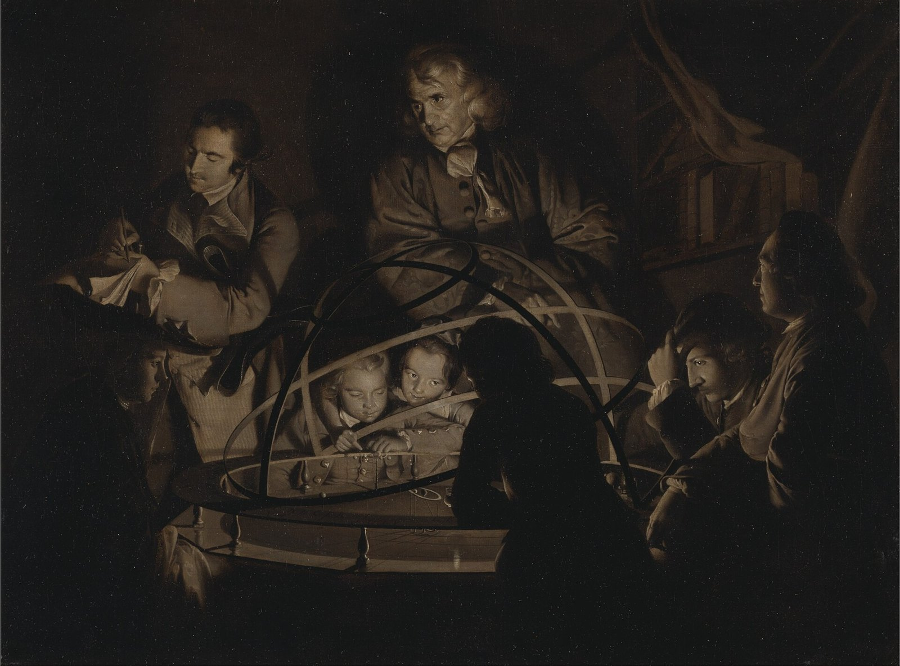
第3回
輪はそれぞれ違う向きに傾いていて、どの輪にも、それが回るための見えない軸が通っている。
Joseph Wright of Derby／Public domain／Wikimedia Commons（《太陽系儀について講義する哲学者》1768年頃の版、イェール英国美術研究センター B1981.25.719）
2026-10-08／講義資料「第3回」（教科書 2.3節 p.19–23）の範囲。第2回の「反時計回りを＋」は、じつは紙面から手前へ向く $z$ 軸のまわりの回転だった。3次元では回転の軸がどの向きにもとれるので、モーメントは「大きさ・回転軸・向き」をもつベクトル $\boldsymbol M=\boldsymbol r\times\boldsymbol F$ になる。そのうち、決まった軸を回す働きだけを取り出すのが $\tau=\boldsymbol u\cdot\boldsymbol M$ である。
授業の共通の題材「小型移動マニピュレータ」が、今回は3次元で登場する。腕の先端の関節 $J_4$ に、斜めの力 $\boldsymbol F$ がかかる。
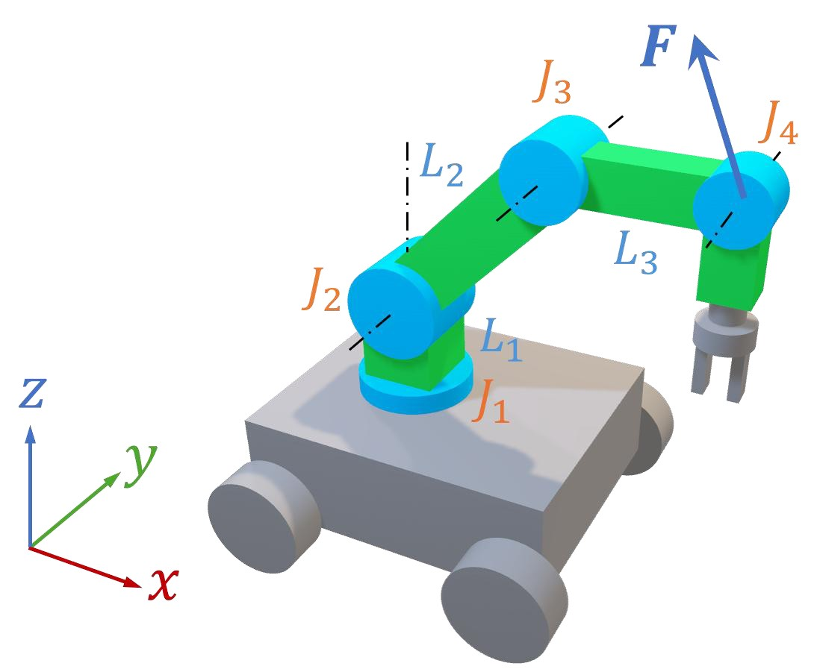
第2回の道具は、すべての力が1枚の平面にあることを前提にしていた。ところがこの力は $x,y,z$ の3成分をもち、2つの関節の軸は鉛直と水平で、向きが違う。同じ1本の力が、軸ごとに違う大きさの「回す働き」を与える。それを1つの手順で計算できるようにするのがこの回の目標である。答えは 7.3 節で出す。
講義資料が挙げた「今日のポイント」は次の3つ。
動機：平面では「$x$ を右、$y$ を上」と決めれば座標は1通りだった。空間では $x,y$ を決めても、$z$ 軸を「手前」と「奥」のどちらに向けるかで2通りの座標系ができる。この2つは回転させても重ならない（右手と左手のように鏡に映した関係）。どちらを使うか決めておかないと、4章で出てくるモーメントの向きが人によって逆になる。
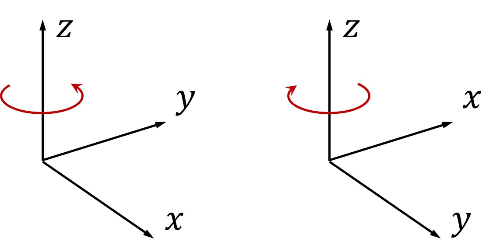
右手系で $z$ 軸の正の側から $xy$ 平面を見下ろすと、$x\to y$ は反時計回りに見える。第2回で「反時計回りを＋」と約束したのは、紙面から手前へ向く $z$ 軸のまわりの回転を右ねじで＋とすることと同じだった（2.1 節で使う）。
力はベクトルで表せる。これは3次元でも同じである。$x,y,z$ 軸の向きの単位ベクトルを $\boldsymbol i,\boldsymbol j,\boldsymbol k$ とすると、
$$\boldsymbol F=F_x\boldsymbol i+F_y\boldsymbol j+F_z\boldsymbol k=\begin{bmatrix}F_x\\F_y\\F_z\end{bmatrix}\qquad(1.1)$$と書ける（講義資料は縦に並べる書き方を使う。本文では場所をとらないよう $(F_x,\,F_y,\,F_z)$ とも書く。同じもの）。
① $\boldsymbol F$ を、$xy$ 平面への影 $(F_x,F_y,0)$ と、$z$ 方向の部分 $(0,0,F_z)$ に分ける。← 2次元のピタゴラスの定理を2回使える形にするため。
② 影の長さは、平面の中のピタゴラスの定理で $\sqrt{F_x^2+F_y^2}$。
③ 影と $z$ 方向の部分は直交する（影は $xy$ 平面内、もう一方は $z$ 軸に平行）。この2つを2辺とする直角三角形の斜辺が $\boldsymbol F$ なので、もう一度ピタゴラスの定理を使って $F^2=\left(\sqrt{F_x^2+F_y^2}\right)^2+F_z^2=F_x^2+F_y^2+F_z^2$。
④ 確かめ：$F_z=0$ なら第1回の2次元の式 $\sqrt{F_x^2+F_y^2}$ に戻る。内積で書けば $F^2=\boldsymbol F\cdot\boldsymbol F$（内積の成分の式 $\boldsymbol a\cdot\boldsymbol b=a_xb_x+a_yb_y+a_zb_z$ は3次元でも同じ形）。
力の向きは「2点を結ぶ向き」で与えられることが多い（ケーブルが点 A から点 B へ張られている、など）。第1回と同じく、向きを単位ベクトルで表し、大きさを掛ける。
点 A$(2,\,0,\,0)$ m から点 B$(0,\,3,\,6)$ m の向きに、大きさ 300 N の力が働く。この力を成分で表せ。
解答
① $\overrightarrow{\mathrm{AB}}=$ 終点−始点 $=(0-2,\ 3-0,\ 6-0)=(-2,\ 3,\ 6)$ m。
② 長さ (1.2)：$\sqrt{(-2)^2+3^2+6^2}=\sqrt{4+9+36}=\sqrt{49}=7$ m。単位ベクトル $\boldsymbol u=(-2,\ 3,\ 6)/7$。
③ $\boldsymbol F=300\boldsymbol u=(-85.71,\ 128.6,\ 257.1)$ N。
④ 確かめ：$\sqrt{85.71^2+128.6^2+257.1^2}=300.0$ N。各成分の符号は $\overrightarrow{\mathrm{AB}}$ と同じ（$x$ は負の向き、$y,z$ は正の向き）。
力の合成は基本的に2次元と同じで、ベクトルの和で求められる（教科書 図2.44）。2つの力 $\boldsymbol F_1,\boldsymbol F_2$ の合力は
$$\boldsymbol R=\boldsymbol F_1+\boldsymbol F_2,\qquad \begin{bmatrix}R_x\\R_y\\R_z\end{bmatrix}=\begin{bmatrix}F_{1x}+F_{2x}\\F_{1y}+F_{2y}\\F_{1z}+F_{2z}\end{bmatrix}\qquad(1.4)$$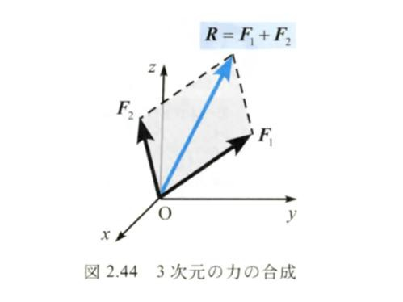
なぜ成分ごとに足してよいか：$\boldsymbol F_1=F_{1x}\boldsymbol i+F_{1y}\boldsymbol j+F_{1z}\boldsymbol k$、$\boldsymbol F_2$ も同様に書いて足すと、ベクトルの和は順序を入れ替えてまとめてよい（交換・結合法則）ので $(F_{1x}+F_{2x})\boldsymbol i+(F_{1y}+F_{2y})\boldsymbol j+(F_{1z}+F_{2z})\boldsymbol k$ になる。平行四辺形の作図（図2.44）と同じものを、数で行っているだけである。
$\boldsymbol F_1=(10,\ -20,\ 15)$ N、$\boldsymbol F_2=(-4,\ 8,\ 10)$ N の合力とその大きさを求めよ。
解答
① (1.4)：$\boldsymbol R=(10-4,\ -20+8,\ 15+10)=(6,\ -12,\ 25)$ N。
② (1.2)：$R=\sqrt{36+144+625}=\sqrt{805}=28.37$ N。
③ 確かめ：$F_1=\sqrt{725}=26.93$ N、$F_2=\sqrt{180}=13.42$ N で、$R=28.37\le F_1+F_2=40.34$ N（丸める前の値で足した。三角形の2辺の和は他の1辺より長い）を満たす。
動機：三脚や3本のワイヤで物を支えるとき、1つの力 $\boldsymbol F$ を、決まった3つの向きの力に分けたい。第1回の2次元では2つの向きに分けて二元連立方程式を解いた。3次元では3つの向きが要る（2つの向きでは1枚の平面の中の力しか作れないため）。
力 $\boldsymbol F$ を、単位ベクトル $\boldsymbol u_1,\boldsymbol u_2,\boldsymbol u_3$ の向きの3つの力 $\boldsymbol F_1,\boldsymbol F_2,\boldsymbol F_3$ に分解する（教科書 図2.45）。それぞれは向きが決まっていて大きさだけが未知なので
$$\boldsymbol F_1=F_1\boldsymbol u_1,\quad \boldsymbol F_2=F_2\boldsymbol u_2,\quad \boldsymbol F_3=F_3\boldsymbol u_3$$と書ける。これらの合力が $\boldsymbol F$ なので
$$F_1\boldsymbol u_1+F_2\boldsymbol u_2+F_3\boldsymbol u_3=\boldsymbol F\qquad(2.49)$$これを $F_1,F_2,F_3$ について解けばよい。ベクトルの式は「$x,y,z$ 成分がそれぞれ等しい」ことと同じなので、成分ごとに書くと
$$\begin{aligned}u_{1x}F_1+u_{2x}F_2+u_{3x}F_3&=F_x\\u_{1y}F_1+u_{2y}F_2+u_{3y}F_3&=F_y\\u_{1z}F_1+u_{2z}F_2+u_{3z}F_3&=F_z\end{aligned}\qquad(2.50)$$または行列で
$$\begin{bmatrix}u_{1x}&u_{2x}&u_{3x}\\u_{1y}&u_{2y}&u_{3y}\\u_{1z}&u_{2z}&u_{3z}\end{bmatrix}\begin{bmatrix}F_1\\F_2\\F_3\end{bmatrix}=\begin{bmatrix}F_x\\F_y\\F_z\end{bmatrix}$$となる。未知数3つ・式3つの三元連立方程式である。行列の列が $\boldsymbol u_1,\boldsymbol u_2,\boldsymbol u_3$ を縦に並べたものになっていることに注意（行列とベクトルの積は「1行目と縦ベクトルの内積が1つ目の成分…」と計算するので、上の連立方程式と同じになる）。
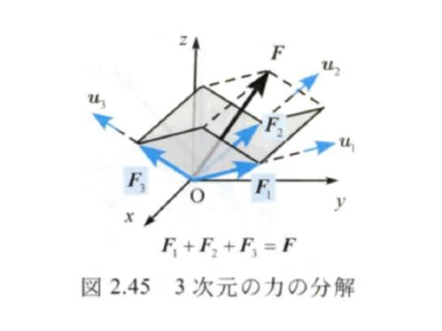
やることは二元のときと同じで、1つの式を使って未知数を1つ消し、未知数の少ない式を作ることを繰り返す。
解がちょうど1組に決まるのは、$\boldsymbol u_1,\boldsymbol u_2,\boldsymbol u_3$ が同じ平面に乗っていないときである（同じ平面にあると、その平面から外れた力は作れない）。これを式で判定する方法（行列式）は 3.6 節で出す。
力 $\boldsymbol F=(26,\ 18,\ 40)$ N を、$\boldsymbol u_1=(0.8,\ 0.6,\ 0)$、$\boldsymbol u_2=(0,\ 0.6,\ 0.8)$、$\boldsymbol u_3=(0.6,\ 0,\ 0.8)$ の向きの3つの力に分解せよ。
解答
① 単位ベクトルか確かめる：$0.8^2+0.6^2=1$ など、どれも長さ 1。
② (2.50) を書く：
$0.8F_1+0\cdot F_2+0.6F_3=26$ …(i)
$0.6F_1+0.6F_2+0\cdot F_3=18$ …(ii)
$0\cdot F_1+0.8F_2+0.8F_3=40$ …(iii)
③ (ii) を 0.6 で割ると $F_1+F_2=30$、よって $F_1=30-F_2$。(iii) を 0.8 で割ると $F_2+F_3=50$、よって $F_3=50-F_2$。← 係数 0 のある式から、$F_1$ と $F_3$ を $F_2$ で表した。
④ (i) に代入：$0.8(30-F_2)+0.6(50-F_2)=26$ → $24-0.8F_2+30-0.6F_2=26$ → $54-1.4F_2=26$ → $1.4F_2=28$ → $F_2=20$ N。
⑤ ③ に戻して $F_1=30-20=10$ N、$F_3=50-20=30$ N。
⑥ 確かめ（3式すべて）：(i) $8+18=26$ ✓、(ii) $6+12=18$ ✓、(iii) $16+24=40$ ✓。答え：$F_1=10$ N、$F_2=20$ N、$F_3=30$ N（どれも正なので、$\boldsymbol u$ と同じ向き）。
PHOTO 1｜現実
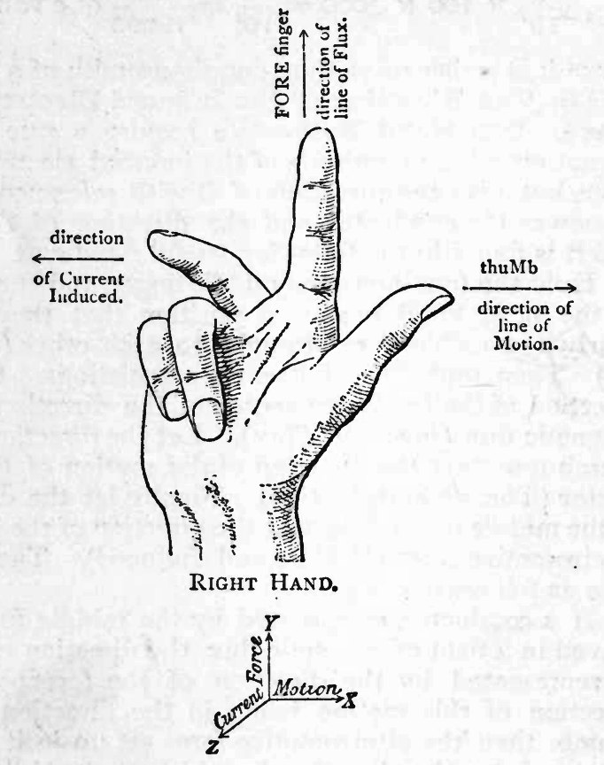
三つの向きを互いに直角に開いた右手は、1902年の教科書では、それ自体が一つの座標系として描かれている。
J. A. Fleming／Public domain／Wikimedia Commons（Magnets and Electric Currents, 1902 より）
MITATE 1｜見立て
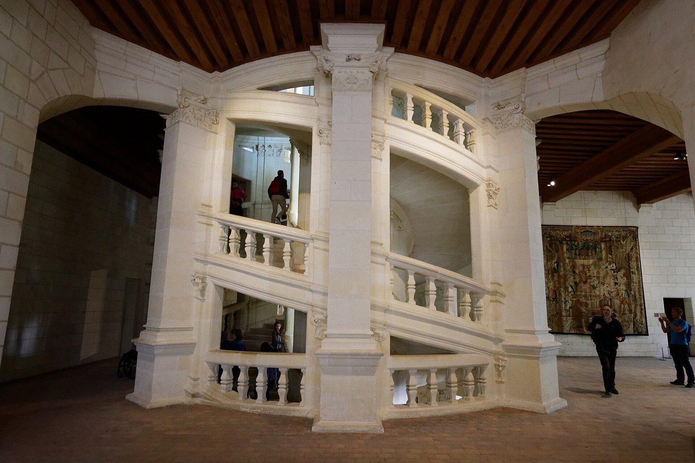
二本の階段は同じ向きにねじれながら一本の柱を巻き、上る人と下りる人を、すれ違わせたまま一度も出会わせない。
Thesupermat／CC BY-SA 4.0／Wikimedia Commons（シャンボール城の二重らせん階段、2016年）
第2回のモーメントは「反時計回り＋、時計回り−」という符号つきの数（スカラー）だった。平面の中の回転は、紙面に垂直な軸のまわりの回転しかなく、向きが2通りしかないから、それで足りた。
3次元の物体はどうか。教科書 図2.46 のように、立方体はさまざまな軸のまわりに回る。飛行機の姿勢も、機体の前後軸まわりのロール、左右軸まわりのピッチ、上下軸まわりのヨーの3つで表す。
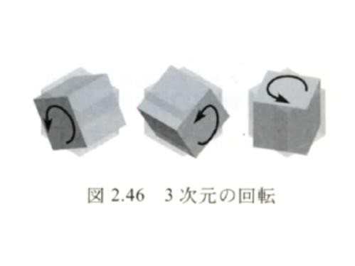
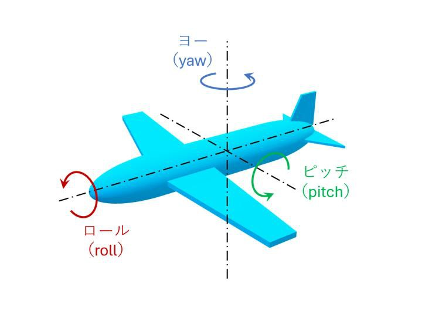
講義資料は次のようにまとめている。
「回す働き」を伝えるには、どれだけ強く（大きさ）、どの直線のまわりに（回転軸）、どちら回りに（向き）の3つが要る。軸の向きを決めるだけで2つの数（球面上の1点）が要り、それに大きさを加えると数が3つ。ちょうどベクトルの成分の数と同じである。
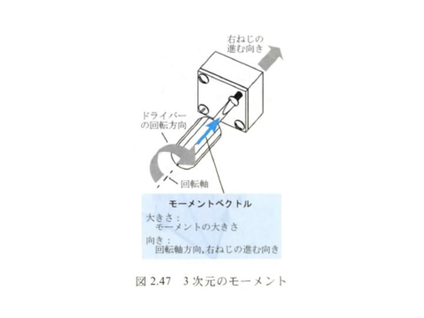
$\boldsymbol M=(3,\ -4,\ 12)$ N·m が表す回転作用の大きさ・回転軸・向きを述べよ。
解答
① 大きさ：$|\boldsymbol M|=\sqrt{9+16+144}=\sqrt{169}=13$ N·m。
② 回転軸：基準点を通り、単位ベクトル $\boldsymbol M/|\boldsymbol M|=(3,\ -4,\ 12)/13=(0.231,\ -0.308,\ 0.923)$ の向きの直線（ほぼ鉛直で、少し傾いている）。
③ 向き：その単位ベクトルの先の側から見下ろして、反時計回り（右ねじがその向きへ進む回し方）。
モーメントベクトルを成分で書くと
$$\boldsymbol M=\begin{bmatrix}M_x\\M_y\\M_z\end{bmatrix}=M_x\boldsymbol i+M_y\boldsymbol j+M_z\boldsymbol k=\begin{bmatrix}M_x\\0\\0\end{bmatrix}+\begin{bmatrix}0\\M_y\\0\end{bmatrix}+\begin{bmatrix}0\\0\\M_z\end{bmatrix}$$モーメントの $x,y,z$ 成分は、それぞれをベクトル $\boldsymbol M_x=M_x\boldsymbol i$、$\boldsymbol M_y=M_y\boldsymbol j$、$\boldsymbol M_z=M_z\boldsymbol k$ として表すことができる。2.2 節の読み方を当てはめると、$\boldsymbol M_x$ は $x$ 軸の向きのモーメント、つまり$x$（に平行な）軸まわりのモーメントを表す。$\boldsymbol M_y,\boldsymbol M_z$ も同じ。それらの合成が、物体に作用するモーメントである：
$$\boldsymbol M=\boldsymbol M_x+\boldsymbol M_y+\boldsymbol M_z$$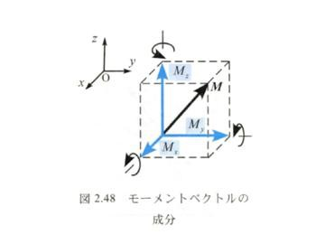
ここで足しているのはモーメント（回す働き）であって、物体を実際に何度か回した結果（有限の回転）ではない。本を「$x$ 軸まわりに 90° → $y$ 軸まわりに 90°」と回した姿勢と、「$y$ 軸まわりに 90° → $x$ 軸まわりに 90°」と回した姿勢は一致しない（試してみるとよい）。有限の回転は順序で結果が変わるので、ベクトルのように足せない。
一方、モーメントが足せることは、4章で $\boldsymbol M=\boldsymbol r\times\boldsymbol F$ が力について足し算を保つ（分配法則）ことから示される。「回転の合成」という講義資料の言い方は、「ある瞬間の回る働き（や回る速さ）の合成」と読むこと。
モーメントベクトルを力と位置から計算する道具が外積（ベクトル積）である。第2回の2次元の外積 $a_xb_y-a_yb_x$ は数（符号つき面積）だったが、3次元の外積はベクトルになる。この章では、成分で定義してから、その幾何学的な意味（垂直・大きさ・右ねじ）を一つずつ導く。
$x$ 成分は「$y,z$」、$y$ 成分は「$z,x$」、$z$ 成分は「$x,y$」で作る。どれも「$x\to y\to z\to x$ の順に次の2つ」を取り、（前の $a$ × 後の $b$）−（後の $a$ × 前の $b$）と書く。たとえば $y$ 成分は「$z,x$」なので $a_zb_x-a_xb_z$。
$z$ 成分 $a_xb_y-a_yb_x$ は第2回の2次元の外積そのものである。$x$ 成分は「$yz$ 平面の2次元の外積」、$y$ 成分は「$zx$ 平面の2次元の外積」になっている（4.2 節でモーメントの意味として使う）。
(3.1) に $\boldsymbol i=(1,0,0)$、$\boldsymbol j=(0,1,0)$ を入れると、$\boldsymbol i\times\boldsymbol j=(0\cdot0-0\cdot1,\ 0\cdot0-1\cdot0,\ 1\cdot1-0\cdot0)=(0,0,1)=\boldsymbol k$。同様に計算して
$$\boldsymbol i\times\boldsymbol j=\boldsymbol k,\quad \boldsymbol j\times\boldsymbol k=\boldsymbol i,\quad \boldsymbol k\times\boldsymbol i=\boldsymbol j,\qquad \boldsymbol j\times\boldsymbol i=-\boldsymbol k,\ \ldots,\qquad \boldsymbol i\times\boldsymbol i=\boldsymbol j\times\boldsymbol j=\boldsymbol k\times\boldsymbol k=\boldsymbol 0\qquad(3.2)$$$\boldsymbol i\times\boldsymbol j=\boldsymbol k$ は「$x$ を $y$ へ回す右ねじは $z$ へ進む」（右手系の定義、1.1 節）とちょうど一致する。(3.1) は右手系に合わせて作られた式である。
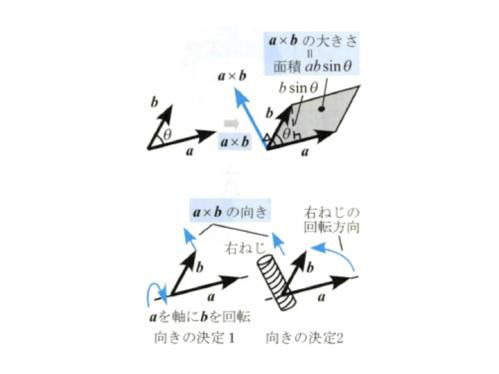
1. 垂直：内積の成分の式で展開する。 $$\boldsymbol a\cdot(\boldsymbol a\times\boldsymbol b)=a_x(a_yb_z-a_zb_y)+a_y(a_zb_x-a_xb_z)+a_z(a_xb_y-a_yb_x)$$ かっこを外すと $a_xa_yb_z-a_xa_zb_y+a_ya_zb_x-a_ya_xb_z+a_za_xb_y-a_za_yb_x$。1項目と4項目（$a_xa_yb_z$）、2項目と5項目（$a_xa_zb_y$）、3項目と6項目（$a_ya_zb_x$）がそれぞれ打ち消し合い、0。$\boldsymbol b$ についても同様。← 内積が 0 ⇔ 垂直（第1回）。
2. 大きさ：次のラグランジュの恒等式を示す。
$$|\boldsymbol a\times\boldsymbol b|^2=a^2b^2-(\boldsymbol a\cdot\boldsymbol b)^2\qquad(3.3)$$
← $\boldsymbol a\cdot\boldsymbol b=ab\cos\theta$ を知っているので、それと結びつければ $\sin\theta$ が出るはず、という見通し。
左辺は $(a_yb_z-a_zb_y)^2+(a_zb_x-a_xb_z)^2+(a_xb_y-a_yb_x)^2$。1つ目を展開すると $a_y^2b_z^2-2a_ya_zb_yb_z+a_z^2b_y^2$。3つとも同じ形なので、
$$\text{左辺}=\underbrace{(a_y^2b_z^2+a_z^2b_y^2+a_z^2b_x^2+a_x^2b_z^2+a_x^2b_y^2+a_y^2b_x^2)}_{\text{添字の違う2乗の積 6項}}-2(a_ya_zb_yb_z+a_za_xb_zb_x+a_xa_yb_xb_y)$$
右辺の $a^2b^2=(a_x^2+a_y^2+a_z^2)(b_x^2+b_y^2+b_z^2)$ を展開すると9項：添字が同じ3項 $a_x^2b_x^2+a_y^2b_y^2+a_z^2b_z^2$ と、上の「添字の違う6項」。
$(\boldsymbol a\cdot\boldsymbol b)^2=(a_xb_x+a_yb_y+a_zb_z)^2$ を展開すると、同じ3項 $a_x^2b_x^2+a_y^2b_y^2+a_z^2b_z^2$ と、$+2(a_xb_xa_yb_y+a_yb_ya_zb_z+a_zb_za_xb_x)$。
引き算すると添字が同じ3項は消え、右辺 $=$（添字の違う6項）$-2(\cdots)$ となって左辺と一致する。
これに $\boldsymbol a\cdot\boldsymbol b=ab\cos\theta$ を入れると
$$|\boldsymbol a\times\boldsymbol b|^2=a^2b^2-a^2b^2\cos^2\theta=a^2b^2(1-\cos^2\theta)=a^2b^2\sin^2\theta$$
（最後は $\sin^2\theta+\cos^2\theta=1$、単位円の上の点 $(\cos\theta,\sin\theta)$ と原点の距離が1であることから）。$0\le\theta\le180^\circ$ では $\sin\theta\ge0$ なので、平方根をとって $|\boldsymbol a\times\boldsymbol b|=ab\sin\theta$。平行四辺形の面積は「底辺 $a$ × 高さ $b\sin\theta$」なので、これは面積に等しい。
3. 向き：1・2 で、$\boldsymbol a\times\boldsymbol b$ は平面に垂直で長さが決まることが分かった。残るのは「垂直な2つの向きのどちらか」だけである。$\boldsymbol a=\boldsymbol i$、$\boldsymbol b=\boldsymbol j$ では $\boldsymbol k$ で、右ねじの向き (3.2)。一般の $\boldsymbol a,\boldsymbol b$（平行でないもの）は、平行にならないまま $\boldsymbol i,\boldsymbol j$ から連続的に動かして作れる。その間 $\boldsymbol a\times\boldsymbol b$ は成分の式なので連続的に変わり、長さは $ab\sin\theta>0$ で 0 にならないので、途中で反対向きに飛び移ることはできない。したがっていつも右ねじの向き。← 厳密には「連続的に動かせる」ことの説明が要るが、ここでは図で納得すれば十分。
4. 反交換：(3.1) で $\boldsymbol a$ と $\boldsymbol b$ を入れ替えると、各成分の2つの項が入れ替わって符号が逆になる（例：$z$ 成分 $b_xa_y-b_ya_x=-(a_xb_y-a_yb_x)$）。$\boldsymbol b=\boldsymbol a$ とすれば $\boldsymbol a\times\boldsymbol a=-\boldsymbol a\times\boldsymbol a$ なので $\boldsymbol 0$。
5. 分配法則：(3.1) の各成分は $\boldsymbol b$ の成分について1次式（$b$ を2つ掛けた項がない）なので、$\boldsymbol b+\boldsymbol c$ を入れると $\boldsymbol b$ の分と $\boldsymbol c$ の分に分かれる。例：$x$ 成分 $a_y(b_z+c_z)-a_z(b_y+c_y)=(a_yb_z-a_zb_y)+(a_yc_z-a_zc_y)$。定数倍も同様。
$\boldsymbol a=(2,\ -1,\ 1)$、$\boldsymbol b=(1,\ 2,\ -1)$ のとき、$\boldsymbol a\times\boldsymbol b$ を求め、定理の1・2 を数値で確かめよ。
解答
① (3.1)：$x$ 成分 $a_yb_z-a_zb_y=(-1)(-1)-(1)(2)=1-2=-1$。$y$ 成分 $a_zb_x-a_xb_z=(1)(1)-(2)(-1)=1+2=3$。$z$ 成分 $a_xb_y-a_yb_x=(2)(2)-(-1)(1)=4+1=5$。$\boldsymbol a\times\boldsymbol b=(-1,\ 3,\ 5)$。
② 垂直：$\boldsymbol a\cdot(\boldsymbol a\times\boldsymbol b)=-2-3+5=0$、$\boldsymbol b\cdot(\boldsymbol a\times\boldsymbol b)=-1+6-5=0$ ✓。
③ 大きさ：$|\boldsymbol a\times\boldsymbol b|=\sqrt{1+9+25}=\sqrt{35}=5.916$。一方 $a=b=\sqrt6$、$\boldsymbol a\cdot\boldsymbol b=2-2-1=-1$ なので (3.3) の右辺 $=6\cdot6-(-1)^2=35$ ✓。
④ なす角：$\cos\theta=-1/6$ より $\theta=99.59^\circ$、$ab\sin\theta=6\times0.9860=5.916$ ✓。
1行目に $\boldsymbol i,\boldsymbol j,\boldsymbol k$、2行目に $\boldsymbol a$、3行目に $\boldsymbol b$ を書いて (3.4) のとおりに展開すると
$$\begin{vmatrix}\boldsymbol i&\boldsymbol j&\boldsymbol k\\a_x&a_y&a_z\\b_x&b_y&b_z\end{vmatrix}=\boldsymbol i(a_yb_z-a_zb_y)-\boldsymbol j(a_xb_z-a_zb_x)+\boldsymbol k(a_xb_y-a_yb_x)$$真ん中の $-\boldsymbol j(a_xb_z-a_zb_x)=\boldsymbol j(a_zb_x-a_xb_z)$ なので、(3.1) と一致する。外積は「1行目が基本ベクトルの行列式」として覚えてよい（講義資料の式2.54 もこの形）。成分に数が入っていない「記号の」行列式だが、展開の手順は同じ。
(3.1) は $\boldsymbol b$ について1次式なので、「行列 × $\boldsymbol b$」の形に書ける。講義資料 p.14 の形：
$$[\boldsymbol a]_\times=\begin{bmatrix}0&-a_z&a_y\\a_z&0&-a_x\\-a_y&a_x&0\end{bmatrix},\qquad \boldsymbol a\times\boldsymbol b=[\boldsymbol a]_\times\boldsymbol b=\begin{bmatrix}0&-a_z&a_y\\a_z&0&-a_x\\-a_y&a_x&0\end{bmatrix}\begin{bmatrix}b_x\\b_y\\b_z\end{bmatrix}\qquad(3.5)$$確かめ：1行目と $\boldsymbol b$ の内積は $0\cdot b_x-a_zb_y+a_yb_z=a_yb_z-a_zb_y$ で (3.1) の $x$ 成分。2行目 $a_zb_x-a_xb_z$、3行目 $-a_yb_x+a_xb_y$ も一致。行列を転置（行と列を入れ替え）すると符号だけが逆になる（$[\boldsymbol a]_\times^T=-[\boldsymbol a]_\times$）ので、この形の行列を歪対称行列（交代行列）という。ベクトル積を行列の積として計算できるので、プログラムで多くの力のモーメントを計算するときに便利である（ロボット工学で多用する）。
5章で、モーメントベクトルと軸の単位ベクトルの内積 $\boldsymbol u\cdot(\boldsymbol r\times\boldsymbol F)$ が出てくる。この形をまとめておく。
① 行列式の式：$\boldsymbol c\cdot(\boldsymbol a\times\boldsymbol b)=c_x(a_yb_z-a_zb_y)+c_y(a_zb_x-a_xb_z)+c_z(a_xb_y-a_yb_x)$。3.4 節の $\boldsymbol i,\boldsymbol j,\boldsymbol k$ の行列式の1行目を $c_x,c_y,c_z$ に置き換えたものと、展開が1項ずつ一致する。
② 体積：平行六面体の底面を $\boldsymbol a,\boldsymbol b$ の平行四辺形とすると、面積は $|\boldsymbol a\times\boldsymbol b|$（3.3 節の2）。高さは $\boldsymbol c$ の、底面に垂直な向き（＝$\boldsymbol a\times\boldsymbol b$ の向き）の成分で、$|\boldsymbol c|\,|\cos\phi|$（$\phi$ は $\boldsymbol c$ と $\boldsymbol a\times\boldsymbol b$ のなす角）。体積＝面積×高さ＝$|\boldsymbol a\times\boldsymbol b|\,|\boldsymbol c|\,|\cos\phi|=|\boldsymbol c\cdot(\boldsymbol a\times\boldsymbol b)|$。
③ 巡回：体積はどの面を底にしても同じなので絶対値は等しい。符号まで等しいことは、(3.6) の行列式を展開して6項を比べると確かめられる（サラスの方法で、行を巡回させると＋の3本と−の3本がそれぞれ入れ替わるだけ）。2行を入れ替えると＋と−の組が入れ替わって符号が逆。
④ 0 になる条件：体積が 0 ⇔ 平行六面体がつぶれている ⇔ 3つのベクトルが同じ平面にある。
1.4 節の (2.49) $F_1\boldsymbol u_1+F_2\boldsymbol u_2+F_3\boldsymbol u_3=\boldsymbol F$ は、外積と内積を使うと未知数を1つずつ取り出せる。
① 両辺と $\boldsymbol u_2\times\boldsymbol u_3$ の内積をとる。← $\boldsymbol u_2\times\boldsymbol u_3$ は $\boldsymbol u_2$ にも $\boldsymbol u_3$ にも垂直なので、$F_2,F_3$ の項が消えるはず。
② $F_1\,\boldsymbol u_1\cdot(\boldsymbol u_2\times\boldsymbol u_3)+F_2\,\underbrace{\boldsymbol u_2\cdot(\boldsymbol u_2\times\boldsymbol u_3)}_{0}+F_3\,\underbrace{\boldsymbol u_3\cdot(\boldsymbol u_2\times\boldsymbol u_3)}_{0}=\boldsymbol F\cdot(\boldsymbol u_2\times\boldsymbol u_3)$（0 は 3.3 節の1）。
③ よって、$D=\boldsymbol u_1\cdot(\boldsymbol u_2\times\boldsymbol u_3)\ne0$ なら $$F_1=\frac{\boldsymbol F\cdot(\boldsymbol u_2\times\boldsymbol u_3)}{D},\quad F_2=\frac{\boldsymbol F\cdot(\boldsymbol u_3\times\boldsymbol u_1)}{D},\quad F_3=\frac{\boldsymbol F\cdot(\boldsymbol u_1\times\boldsymbol u_2)}{D}\qquad(3.7)$$ （$F_2,F_3$ も同様に、残りの2つの外積との内積をとる。分母が同じ $D$ になるのは三重積の巡回の性質による。）
④ 1.4 節の「解がちょうど1組に決まるのは $\boldsymbol u_1,\boldsymbol u_2,\boldsymbol u_3$ が同じ平面にないとき」は、$D\ne0$ と同じこと（3.6 節の④）。これは線形代数で習うクラメルの公式を、ベクトルの言葉で書いたものである。
例題3 の分解を (3.7) で解け。
解答
① $\boldsymbol u_2\times\boldsymbol u_3=(0.6\cdot0.8-0.8\cdot0,\ 0.8\cdot0.6-0\cdot0.8,\ 0\cdot0-0.6\cdot0.6)=(0.48,\ 0.48,\ -0.36)$。
② $D=\boldsymbol u_1\cdot(\boldsymbol u_2\times\boldsymbol u_3)=0.8\times0.48+0.6\times0.48+0=0.672$（≠0 なので解は1組）。
③ $F_1=\boldsymbol F\cdot(0.48,0.48,-0.36)/D=(12.48+8.64-14.40)/0.672=6.72/0.672=10.0$ N。
④ $\boldsymbol u_3\times\boldsymbol u_1=(0\cdot0-0.8\cdot0.6,\ 0.8\cdot0.8-0.6\cdot0,\ 0.6\cdot0.6-0\cdot0.8)=(-0.48,\ 0.64,\ 0.36)$、$F_2=(-12.48+11.52+14.40)/0.672=13.44/0.672=20.0$ N。
⑤ $\boldsymbol u_1\times\boldsymbol u_2=(0.6\cdot0.8-0\cdot0.6,\ 0\cdot0-0.8\cdot0.8,\ 0.8\cdot0.6-0.6\cdot0)=(0.48,\ -0.64,\ 0.48)$、$F_3=(12.48-11.52+19.20)/0.672=20.16/0.672=30.0$ N。
⑥ 例題3 と一致 ✓。消去法は「その場の工夫」が要るが、(3.7) は機械的に計算できる。
物体上の点に作用する力 $\boldsymbol F$ が、点 P に与えるモーメントを求める。$\boldsymbol r$ を点 P から力の作用点へのベクトルとする。
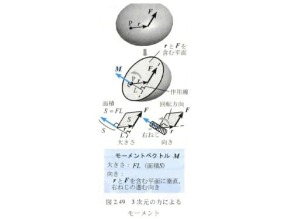
① 平面を1枚選ぶ：点 P、ベクトル $\boldsymbol r$、力 $\boldsymbol F$ は1枚の平面に乗る（$\boldsymbol r$ と $\boldsymbol F$ が平行でなければ、それらを含む平面がちょうど1枚ある）。← 平面の中なら第2回の結果がそのまま使えるから。
② 大きさ：その平面の中では2次元のモーメントと同じ。腕は P から作用線への垂線で $L=r\sin\theta$（$\theta$ は $\boldsymbol r$ と $\boldsymbol F$ のなす角。第2回 3.1 節）なので、大きさは $FL=rF\sin\theta$。
③ 回転軸：平面の中の回転なので、軸は P を通り$\boldsymbol r$ と $\boldsymbol F$ を含む平面に垂直。
④ 回転の向き：力は P のまわりを「$\boldsymbol r$ の向きから $\boldsymbol F$ の向きへ」回そうとする。$\boldsymbol r$ から $\boldsymbol F$ へ小さいほうの角度へ右ねじを回転させると、ねじの進む向きとモーメントベクトルの向きが一致する（2.2 節の約束）。
⑤ 外積と比べる：大きさ $rF\sin\theta$、平面に垂直、$\boldsymbol r$ から $\boldsymbol F$ へ回す右ねじの向き――この3つは 3.3 節の定理1〜3 で示した $\boldsymbol r\times\boldsymbol F$ の性質と完全に一致する。長さ・直線・向きが同じベクトルは等しいので、
$\boldsymbol r=(r_x,r_y,r_z)$、$\boldsymbol F=(F_x,F_y,F_z)$ のとき、(3.1)・3.4 節より
講義資料は力を先に書いている（$F_zr_y$ は $r_yF_z$ と同じ）。
各成分は「その軸から見た2次元のモーメント」：$z$ 成分 $F_yr_x-F_xr_y$ は、第2回の式2.30′ そのものである。つまり$z$ 軸の正の側から見下ろして、$xy$ 平面に映った $\boldsymbol r$ と $\boldsymbol F$ で計算した2次元のモーメント。同じように、$x$ 成分 $F_zr_y-F_yr_z$ は、$x$ 軸の正の側から $yz$ 平面を見て、「$y$ を横軸・$z$ を縦軸」とした2次元の式（第2回の式で $x\to y$、$y\to z$ と読み替えたもの）。右手系では $x$ 軸の正の側から見ると $y\to z$ が反時計回りなので、符号の約束も第2回と同じになる。$y$ 成分も「$z$ を横軸・$x$ を縦軸」として同様。これが 2.3 節の「成分＝各軸まわりのモーメント」の中身である。
点 P（原点）から $x$ 軸に沿って水平に伸びる腕の先 $(0.5,\ 0,\ 0)$ m に、重さ 100 N（下向き）が働く。P まわりのモーメントベクトルを求め、向きの意味を説明せよ。
解答
① $\boldsymbol r=(0.5,\ 0,\ 0)$ m、$\boldsymbol F=(0,\ 0,\ -100)$ N。
② (2.54)：$x$ 成分 $F_zr_y-F_yr_z=(-100)(0)-0=0$、$y$ 成分 $F_xr_z-F_zr_x=0-(-100)(0.5)=50$、$z$ 成分 $F_yr_x-F_xr_y=0$。$\boldsymbol M=(0,\ 50,\ 0)$ N·m。
③ 向き：$+y$ 向き。$+y$ 軸の先から見ると、$z\to x$ の向き（右手系で $\boldsymbol k\times\boldsymbol i=\boldsymbol j$）が反時計回り。$z$ 軸（上）を $x$ 軸（腕の先）へ倒す向き、つまり腕の先が下がる向きで、直感どおり。
④ 確かめ：大きさ $50=FL=100\times0.5$（腕は水平距離 0.5 m）。
地面の点 O（原点）に立つ高さ 6 m の柱の頂点 A$(0,\ 0,\ 6)$ m から、地面の点 B$(3,\ -2,\ 0)$ m へケーブルを張り、張力 $T=700$ N がかかっている。張力が柱に与える、O まわりのモーメントを求めよ。
解答
① 系：柱。A に、A から B の向きの力 $\boldsymbol T$ が働く。
② 座標：問題のとおり（O 原点、$z$ 上向き）。
③ 力を成分で (1.3)：$\overrightarrow{\mathrm{AB}}=(3,\ -2,\ -6)$、長さ $\sqrt{9+4+36}=7$ m。$\boldsymbol T=700\times(3,\ -2,\ -6)/7=(300,\ -200,\ -600)$ N。$\boldsymbol r=\overrightarrow{\mathrm{OA}}=(0,\ 0,\ 6)$ m。
④ (2.54)：$x$ 成分 $T_zr_y-T_yr_z=(-600)(0)-(-200)(6)=1200$、$y$ 成分 $T_xr_z-T_zr_x=(300)(6)-(-600)(0)=1800$、$z$ 成分 $T_yr_x-T_xr_y=0$。$\boldsymbol M_O=(1200,\ 1800,\ 0)$ N·m、大きさ $\sqrt{1200^2+1800^2}=2163$ N·m。
⑤ 確かめ1（作用線上でずらす、4.3 節）：$\boldsymbol r=\overrightarrow{\mathrm{OB}}=(3,\ -2,\ 0)$ で計算しても $x$：$(-600)(-2)-(-200)(0)=1200$、$y$：$(300)(0)-(-600)(3)=1800$、$z$：$(-200)(3)-(300)(-2)=0$ で同じ ✓。
⑥ 確かめ2：$\boldsymbol M_O\cdot\boldsymbol T=360000-360000+0=0$ ✓。$z$ 成分が 0 なのは、鉛直な柱を「ねじる」働きがないことを表す（張力の作用線が柱の軸 $z$ と交わるので、5章の言葉では $z$ 軸まわりのモーメントが 0）。
PHOTO 2｜現実
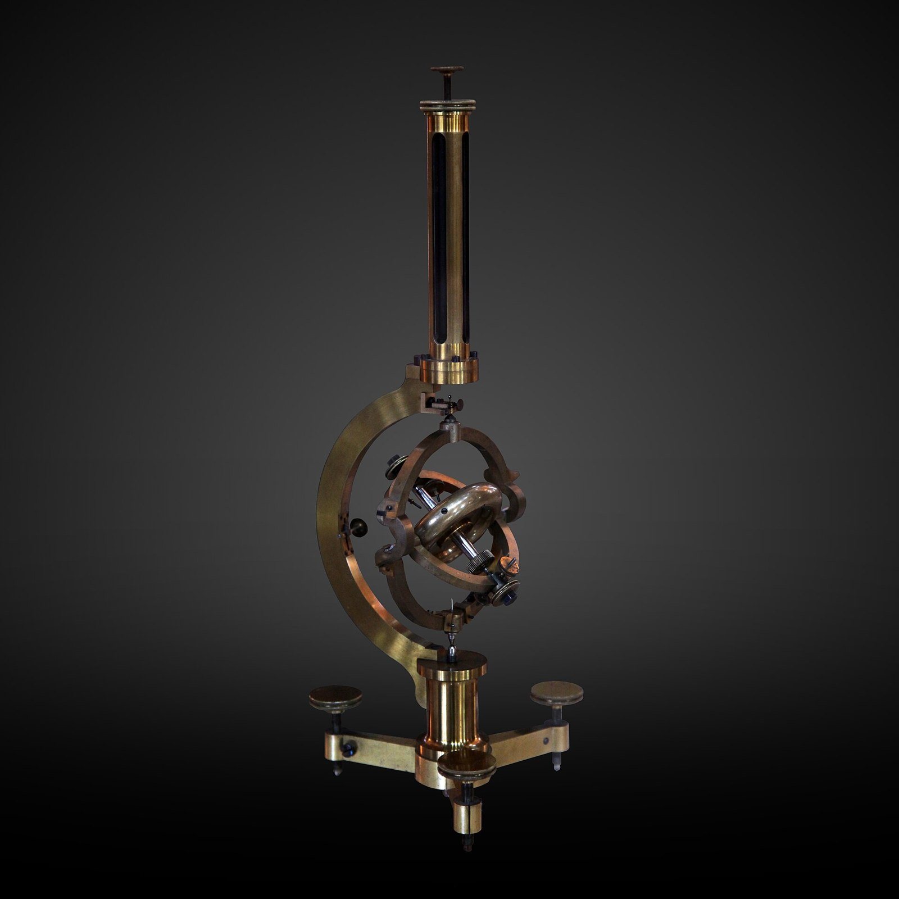
入れ子の輪に吊られた円盤の軸は、台をどう傾けても、宇宙の中の同じ向きを指し続けようとする。
Rama／CC BY-SA 3.0 fr／Wikimedia Commons（フーコーのジャイロスコープ、パリ工芸博物館 7688）
MITATE 2｜見立て
羽ペンと本は脇へ押しやられ、少年の目は、机の上に立った一本の細い軸に注がれている。
Jean-Siméon Chardin／Public domain／Wikimedia Commons（《独楽を回す少年》1738年、ルーヴル美術館 RF 1705）
扉は蝶番の軸のまわりにしか回れない。ロボットの関節も、それぞれ決まった1本の軸のまわりにしか回らない。このとき知りたいのは「力がその軸を回そうとする働き」であって、4章の $\boldsymbol M$（どの向きの軸にも回れるとしたときの回す働き）全部ではない。
扉の取っ手を、扉に垂直に押せば扉は開く。しかし、蝶番に向かって押しても、真上に引き上げても扉は回らない。これらの力も蝶番の上の点のまわりにはモーメントをもつ（4章の式で計算すれば 0 でない）が、その働きは蝶番の金具が受け止めてしまう。軸の向きの成分だけが、軸を回す。
軸の向きの単位ベクトルを $\boldsymbol u$ とすると、ベクトルの $\boldsymbol u$ 方向の成分は内積で取り出せる（第1回：$\boldsymbol u\cdot\boldsymbol M=|\boldsymbol M|\cos\phi$ は $\boldsymbol M$ の $\boldsymbol u$ への正射影の長さ）ので
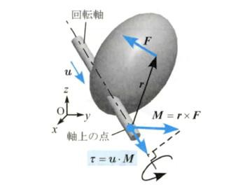
以下の3節で、この「考え方」がなぜ正しいのかを確かめる。講義資料は結論だけを述べているので、本教材で補った。
① 軸上の2点 P、Q を選ぶ。どちらも軸上なので、$\overrightarrow{\mathrm{PQ}}=s\boldsymbol u$（$s$ は数）と書ける。
② 作用点を A とすると $\overrightarrow{\mathrm{QA}}=\overrightarrow{\mathrm{PA}}-\overrightarrow{\mathrm{PQ}}=\boldsymbol r_P-s\boldsymbol u$。
③ $\boldsymbol M_Q=(\boldsymbol r_P-s\boldsymbol u)\times\boldsymbol F=\boldsymbol M_P-s\,\boldsymbol u\times\boldsymbol F$（分配法則）。← 2点のモーメントの差は「基準点のずれ×力」。6.4 節の一般の式の特別な場合。
④ $\boldsymbol u$ との内積：$\boldsymbol u\cdot\boldsymbol M_Q=\boldsymbol u\cdot\boldsymbol M_P-s\,\underbrace{\boldsymbol u\cdot(\boldsymbol u\times\boldsymbol F)}_{0}=\boldsymbol u\cdot\boldsymbol M_P$（0 は外積の垂直性、3.3 節の1）。
⑤ よって $\tau$ は軸上の点の選び方によらない。$\boldsymbol M_P$ と $\boldsymbol M_Q$ そのものは違ってよい（違うのは軸に垂直な部分だけ）。だから講義資料の手順では、計算が楽な点を「適当に」選んでよい。
$\tau$ が本当に「軸を回す働き」であることを、力と位置を分解して確かめる。
① P を軸上の点とし、$\boldsymbol r$（P→作用点）と $\boldsymbol F$ を、軸に平行な部分と軸に垂直な部分に分ける：$\boldsymbol r=\boldsymbol r_\parallel+\boldsymbol r_\perp$、$\boldsymbol F=\boldsymbol F_\parallel+\boldsymbol F_\perp$（$\boldsymbol r_\parallel=(\boldsymbol u\cdot\boldsymbol r)\boldsymbol u$、$\boldsymbol r_\perp=\boldsymbol r-\boldsymbol r_\parallel$。$\boldsymbol F$ も同じ）。
② 分配法則で4つに分ける：$\boldsymbol r\times\boldsymbol F=\boldsymbol r_\parallel\times\boldsymbol F_\parallel+\boldsymbol r_\parallel\times\boldsymbol F_\perp+\boldsymbol r_\perp\times\boldsymbol F_\parallel+\boldsymbol r_\perp\times\boldsymbol F_\perp$。
③ $\boldsymbol u$ との内積をとる。1項目：$\boldsymbol r_\parallel$ と $\boldsymbol F_\parallel$ はどちらも $\boldsymbol u$ に平行なので外積は $\boldsymbol 0$。2項目と3項目：どちらも $\boldsymbol u$ に平行なベクトルとの外積なので、$\boldsymbol u$ に垂直（3.3 節の1）→ 内積 0。残るのは
$$\tau=\boldsymbol u\cdot(\boldsymbol r_\perp\times\boldsymbol F_\perp)$$④ $\boldsymbol r_\perp$ も $\boldsymbol F_\perp$ も軸に垂直な平面の中にあるので、その外積は軸に平行で、$\boldsymbol u$ との内積は「平面の中の2次元のモーメント（$\boldsymbol u$ の側から見て反時計回り＋）」になる（4.1 節の②〜④）。大きさは $F_\perp\times d$（$d$ は軸と $\boldsymbol F$ の作用線の、軸に垂直な面での距離）。
⑤ 結論：軸まわりのモーメント＝軸の正の側から見下ろした図で、力の「軸に垂直な成分」が作る2次元のモーメント。力の軸方向の成分 $\boldsymbol F_\parallel$ と、作用点の軸方向の位置 $\boldsymbol r_\parallel$ は答えに入らない。5.1 節の「真上に引いても回らない」「どの高さを押しても同じ」がこれである。残りの $\boldsymbol M-\tau\boldsymbol u$（軸に垂直な部分）は、軸を傾けようとする働きで、軸受（蝶番の金具）が受け止める。
扉が $xz$ 平面にあり、蝶番の軸は $z$ 軸である。取っ手の点 $(0.8,\ 0,\ 1.0)$ m に力 $\boldsymbol F=(-20,\ 30,\ 15)$ N が働く。(1) 原点 O まわりのモーメントベクトル、(2) 蝶番の軸まわりのモーメントを求めよ。
解答
① (1) $\boldsymbol r=(0.8,\ 0,\ 1.0)$。(2.54)：$x$ 成分 $F_zr_y-F_yr_z=15\cdot0-30\cdot1.0=-30$、$y$ 成分 $F_xr_z-F_zr_x=(-20)(1.0)-15(0.8)=-32$、$z$ 成分 $F_yr_x-F_xr_y=30(0.8)-(-20)(0)=24$。$\boldsymbol M_O=(-30,\ -32,\ 24)$ N·m、大きさ $\sqrt{900+1024+576}=50$ N·m。
② (2) 軸の単位ベクトル $\boldsymbol u=\boldsymbol k=(0,0,1)$、O は軸上。(2.60)：$\tau=0\cdot(-30)+0\cdot(-32)+1\cdot24=24$ N·m（$+z$ の側から見て反時計回り＝扉が $+y$ の側へ開く向き）。
③ 確かめ（5.4 節）：$+z$ 側から見下ろすと、$xy$ 平面に映った作用点は $(0.8,\ 0)$、力は $(F_x,F_y)=(-20,\ 30)$。2次元の式 $F_yr_x-F_xr_y=30\times0.8-0=24$ ✓。$F_x$ は作用線が軸を通る（腕 0）、$F_z$ は軸に平行で、どちらも効かない。
④ 50 N·m のうち軸を回すのは 24 N·m だけで、残りの $(-30,\ -32,\ 0)$ N·m は蝶番の金具が受ける（扉を傾けようとする働き）。
講義資料 p.16 の注意「$\boldsymbol M$ は軸上の点まわりでなければならない」の理由を、反例で確かめる。5.3 節の証明の ④ で $\boldsymbol u\cdot(\boldsymbol u\times\boldsymbol F)=0$ が使えたのは、2点のずれが $\boldsymbol u$ に平行だったからである。軸から外れた点 Q では、ずれ $\overrightarrow{\mathrm{PQ}}$ が $\boldsymbol u$ に平行でないので、$\boldsymbol u\cdot(\overrightarrow{\mathrm{PQ}}\times\boldsymbol F)$ が一般に 0 にならない。
原点 O と点 C$(2,\ 2,\ 1)$ m を通る軸がある。点 D$(1,\ 0,\ 2)$ m に力 $\boldsymbol F=(10,\ -20,\ 30)$ N が働く。(1) この軸まわりのモーメントを、O を使って求めよ。(2) C を使って求め、一致を確かめよ。(3) 軸上にない点 E$(1,\ 0,\ 0)$ を使うと違う値になることを確かめよ。
解答
① 軸の向き：$\overrightarrow{\mathrm{OC}}=(2,2,1)$、長さ 3。$\boldsymbol u=(2,\ 2,\ 1)/3$。
② (1) $\boldsymbol r=\overrightarrow{\mathrm{OD}}=(1,0,2)$。$\boldsymbol M_O$：$x$ $(30)(0)-(-20)(2)=40$、$y$ $(10)(2)-(30)(1)=-10$、$z$ $(-20)(1)-(10)(0)=-20$ → $(40,\ -10,\ -20)$。$\tau=(2\cdot40+2\cdot(-10)+1\cdot(-20))/3=40/3=13.33$ N·m。
③ (2) $\boldsymbol r=\overrightarrow{\mathrm{CD}}=(-1,\ -2,\ 1)$。$\boldsymbol M_C$：$x$ $(30)(-2)-(-20)(1)=-40$、$y$ $(10)(1)-(30)(-1)=40$、$z$ $(-20)(-1)-(10)(-2)=40$ → $(-40,\ 40,\ 40)$。$\boldsymbol M_C\ne\boldsymbol M_O$ だが、$\tau=(-80+80+40)/3=13.33$ N·m で一致 ✓（5.3 節）。
④ (3) $\boldsymbol r=\overrightarrow{\mathrm{ED}}=(0,0,2)$。$\boldsymbol M_E$：$x$ $(30)(0)-(-20)(2)=40$、$y$ $(10)(2)-(30)(0)=20$、$z$ $0$ → $(40,\ 20,\ 0)$。$\boldsymbol u\cdot\boldsymbol M_E=(80+40)/3=40.0$ N·m で、正しい値 13.33 と違う。E は軸上にないので、この 40.0 は「E を通り $\boldsymbol u$ に平行な、別の軸」まわりのモーメントである。
(2.54) と (2.60) をまとめると、講義資料 p.17 の式になる。
① (2.54) を基本ベクトルで書く：$\boldsymbol M=\boldsymbol r\times\boldsymbol F=(F_zr_y-F_yr_z)\boldsymbol i+(F_xr_z-F_zr_x)\boldsymbol j+(F_yr_x-F_xr_y)\boldsymbol k$。
② (2.60) に入れる：$\tau=\boldsymbol u\cdot\boldsymbol M=u_x(F_zr_y-F_yr_z)+u_y(F_xr_z-F_zr_x)+u_z(F_yr_x-F_xr_y)$。
③ これは、3.4 節の $\boldsymbol i,\boldsymbol j,\boldsymbol k$ の行列式の1行目を $u_x,u_y,u_z$ に置き換えて展開したものと1項ずつ同じ（3.6 節のスカラー三重積）。よって
例題10 (1) で確かめる（1行目で展開）：
$$\begin{aligned}\begin{vmatrix}2/3&2/3&1/3\\1&0&2\\10&-20&30\end{vmatrix}&=\tfrac23\bigl(0\cdot30-2\cdot(-20)\bigr)-\tfrac23\bigl(1\cdot30-2\cdot10\bigr)+\tfrac13\bigl(1\cdot(-20)-0\cdot10\bigr)\\&=\tfrac{80}{3}-\tfrac{20}{3}-\tfrac{20}{3}=\tfrac{40}{3}\quad✓\end{aligned}$$| 点まわりのモーメント | 軸まわりのモーメント | |
|---|---|---|
| 回転軸 | 後で決まる（$\boldsymbol M$ の向きが軸） | 決まっている（$\boldsymbol u$） |
| 式 | $\boldsymbol M=\boldsymbol r\times\boldsymbol F$（ベクトル） | $\tau=\boldsymbol u\cdot\boldsymbol M$（数）、$\boldsymbol M_a=\tau\boldsymbol u$ |
| 基準 | 点 P（どの点でもよいが、値は点で変わる） | 軸上の任意の点（値は点によらない） |
| 意味 | その点のまわりに自由に回れるときの回す働き | 点まわりのモーメントの軸方向成分 |
PHOTO 3｜現実
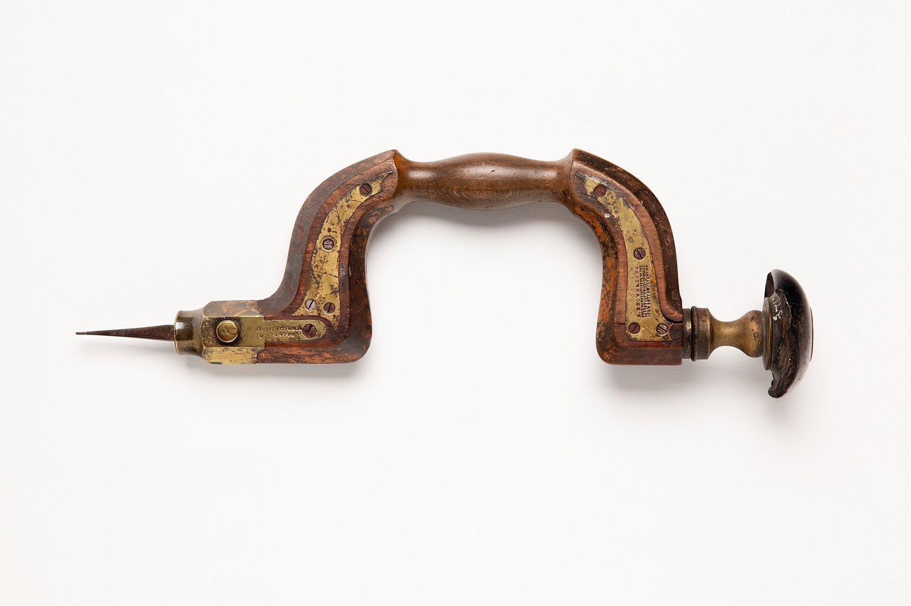
丸いノブを押す力は穴を深くするだけで、錐を回すのは、曲がった柄の握りを軸のまわりに押す力だけである。
Auckland Museum／CC BY 2.0／Wikimedia Commons（手回し錐、1850年代イギリス製、オークランド博物館 1963.190）
MITATE 3｜見立て
経を納めた八角の蔵は、中心の一本の柱のまわりにだけ回るように作られていて、どこを押しても、回るのは軸に沿った向きの分だけである。
钉钉／CC BY-SA 4.0／Wikimedia Commons（高麗寺の転輪蔵、浙江省、2021年）
第2回の 4・5 章（偶力、力の移動、合成）は、2次元の外積を3次元の外積に置き換えるだけで、そのまま3次元でも成り立つ。証明で使ったのは分配法則と反交換だけで、どちらも 3.3 節で3次元でも示したからである。
図の2つの力 $\boldsymbol F$（点 A）、$-\boldsymbol F$（点 B）が、任意の点 P のまわりに与えるモーメントを求める。
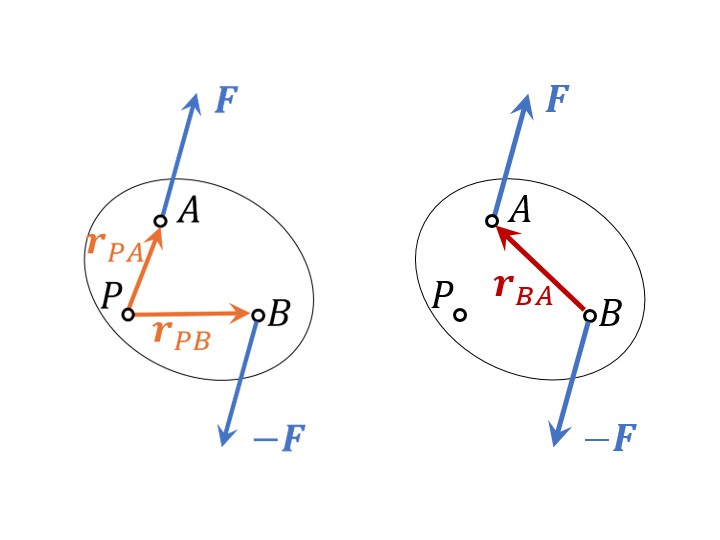
① $\boldsymbol F$ によるモーメント：$\boldsymbol M_A=\boldsymbol r_{PA}\times\boldsymbol F$。
② $-\boldsymbol F$ によるモーメント：$\boldsymbol M_B=\boldsymbol r_{PB}\times(-\boldsymbol F)=-\boldsymbol r_{PB}\times\boldsymbol F$。
③ 点 P に働く全モーメント（分配法則で $\boldsymbol F$ をくくり出す）：$$\boldsymbol M=\boldsymbol M_A+\boldsymbol M_B=(\boldsymbol r_{PA}-\boldsymbol r_{PB})\times\boldsymbol F=\boldsymbol r_{BA}\times\boldsymbol F$$ （$\boldsymbol r_{PA}-\boldsymbol r_{PB}=\overrightarrow{\mathrm{PA}}-\overrightarrow{\mathrm{PB}}=\overrightarrow{\mathrm{BA}}$：終点−始点の形で、P が消える）。
④ 結果に P の位置が入っていない → 点 P の位置に無関係。偶力はどの点まわりにも同じモーメントを与える（＝純粋モーメント）。向きは2本の力を含む平面に垂直。
点 A$(0.4,\ 0,\ 0)$ m に $\boldsymbol F=(0,\ 0,\ 50)$ N、点 B$(0,\ 0.3,\ 0)$ m に $-\boldsymbol F$ が働く。偶力のモーメントを求め、原点と点 P$(1,\ 1,\ 1)$ のまわりで直接計算しても同じになることを確かめよ。
解答
① $\boldsymbol r_{BA}=(0.4,\ -0.3,\ 0)$。$\boldsymbol M=\boldsymbol r_{BA}\times\boldsymbol F$：$x$ $(50)(-0.3)-0\cdot0=-15$、$y$ $0\cdot0-(50)(0.4)=-20$、$z$ $0$ → $(-15,\ -20,\ 0)$ N·m、大きさ 25 N·m（$=F\times$ 2本の作用線の距離 0.5 m）。
② 原点まわり：A の力 $(0.4,0,0)\times(0,0,50)=(0,\ -20,\ 0)$、B の力 $(0,0.3,0)\times(0,0,-50)=(-15,\ 0,\ 0)$、和 $(-15,\ -20,\ 0)$ ✓。
③ P まわり：$\overrightarrow{\mathrm{PA}}=(-0.6,-1,-1)$、$(-0.6,-1,-1)\times(0,0,50)=(-50,\ 30,\ 0)$。$\overrightarrow{\mathrm{PB}}=(-1,-0.7,-1)$、$(-1,-0.7,-1)\times(0,0,-50)=(35,\ -50,\ 0)$。和 $(-15,\ -20,\ 0)$ ✓。
点 A に力 $\boldsymbol F$ が作用しているとき、点 P への作用はどうなるか。第2回 5.1 節と同じ4ステップで考える。
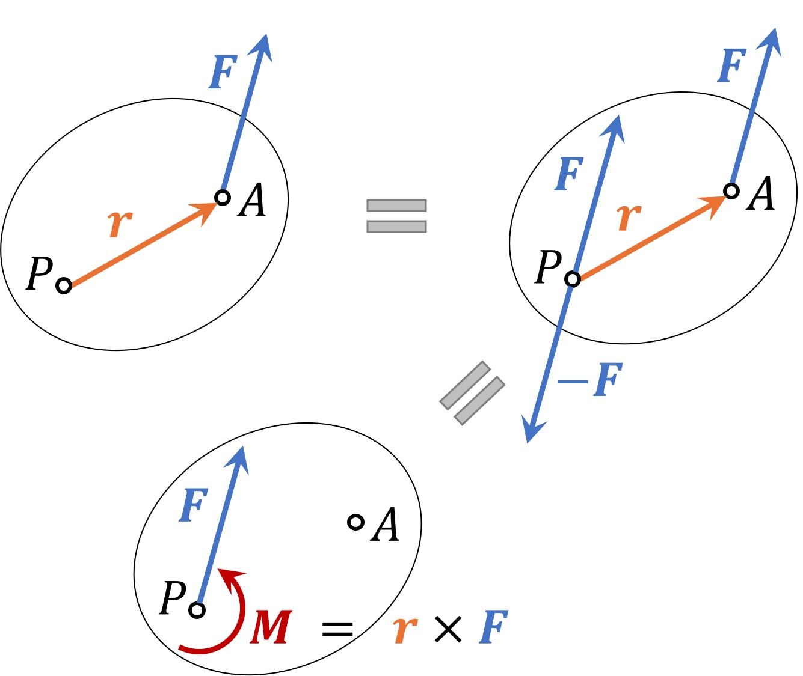
物体上の $n$ 個の点に力 $\boldsymbol F_1,\ldots,\boldsymbol F_n$、$m$ 個の点に純粋モーメント $\boldsymbol M_1,\ldots,\boldsymbol M_m$ が作用しているとする（講義資料 p.19）。6.2 節で各力を点 P へ移し、純粋モーメントはどこでも同じ（6.1 節）なのでそのまま P へ持ってくると、点 P に与える力 $\boldsymbol F$ とモーメント $\boldsymbol M$ は
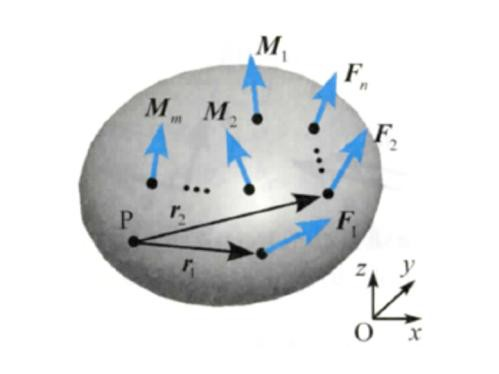
点 P で $\boldsymbol F,\boldsymbol M_P$ と求めた後、別の点 Q での値が欲しくなることがある。(2.59) を Q でやり直すと、$\boldsymbol r_i$ が $\overrightarrow{\mathrm{QP}}+\boldsymbol r_i$ に変わるだけなので、分配法則で
$$\boldsymbol M_Q=\sum(\overrightarrow{\mathrm{QP}}+\boldsymbol r_i)\times\boldsymbol F_i+\sum\boldsymbol M_j=\boldsymbol M_P+\overrightarrow{\mathrm{QP}}\times\boldsymbol F\qquad(6.1)$$（第2回 5.5 節の3次元版。5.3 節の証明の ③ はこの特別な場合）。力の和 $\boldsymbol F$ は基準点によらない。
$\boldsymbol F_1=(0,\ 0,\ -200)$ N が点 $(0.5,\ 0.2,\ 0)$ m に、$\boldsymbol F_2=(100,\ 0,\ 0)$ N が点 $(0,\ 0.3,\ 0.4)$ m に、純粋モーメント $\boldsymbol M_3=(0,\ 0,\ 30)$ N·m が働く。(1) 原点 O に集めた力とモーメント、(2) 点 Q$(1,\ 0,\ 0)$ m でのモーメントを (6.1) で求めよ。
解答
① (2.58)：$\boldsymbol F=(100,\ 0,\ -200)$ N。
② $\boldsymbol r_1\times\boldsymbol F_1=(0.5,0.2,0)\times(0,0,-200)$：$x$ $(-200)(0.2)-0=-40$、$y$ $0-(-200)(0.5)=100$、$z$ $0$ → $(-40,\ 100,\ 0)$。
③ $\boldsymbol r_2\times\boldsymbol F_2=(0,0.3,0.4)\times(100,0,0)$：$x$ $0\cdot0.3-0\cdot0.4=0$、$y$ $(100)(0.4)-0=40$、$z$ $0-(100)(0.3)=-30$ → $(0,\ 40,\ -30)$。
④ (2.59)：$\boldsymbol M_O=(-40,100,0)+(0,40,-30)+(0,0,30)=(-40,\ 140,\ 0)$ N·m。
⑤ (2) $\overrightarrow{\mathrm{QO}}=(-1,0,0)$。$\overrightarrow{\mathrm{QO}}\times\boldsymbol F=(-1,0,0)\times(100,0,-200)$：$x$ $(-200)(0)-0\cdot0=0$、$y$ $(100)(0)-(-200)(-1)=-200$、$z$ $0\cdot(-1)-(100)(0)=0$ → $(0,\ -200,\ 0)$。$\boldsymbol M_Q=(-40,\ -60,\ 0)$ N·m。
⑥ 確かめ：Q から直接 (2.59) で計算すると、$(-0.5,0.2,0)\times(0,0,-200)=(-40,\ -100,\ 0)$、$(-1,0.3,0.4)\times(100,0,0)=(0,\ 40,\ -30)$、＋$(0,0,30)$ で $(-40,\ -60,\ 0)$ ✓。
力 $\boldsymbol F$ が軸 a、b まわりに与えるモーメントを求めよ。着力点 P$(-0.45,\ 0.25,\ 1.1)$ m、$\boldsymbol F=(-8,\ -5,\ 7)$ N。軸 a は原点 A を通る鉛直な軸（$z$ 方向）、軸 b は点 B$(-0.2,\ 0,\ 0.5)$ m を通る $y$ 方向の軸。
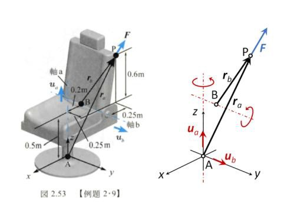
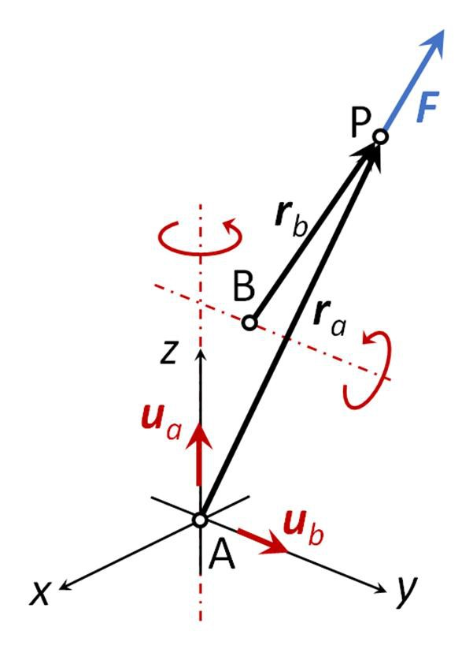
解答（講義資料の方針：1. 軸 a、b 上にある適当な点を選ぶ → 2. それぞれの点まわりのモーメントを求める → 3. 求めたモーメントの軸 a、b 方向成分を求める）
① 系と基準：椅子に働く力 $\boldsymbol F$。軸 a 上の点として A$(0,\ 0,\ 0)$、軸 b 上の点として B$(-0.2,\ 0,\ 0.5)$ を選ぶ。
② 軸の単位ベクトル：$\boldsymbol u_a=(0,\ 0,\ 1)$、$\boldsymbol u_b=(0,\ 1,\ 0)$。
③ 位置ベクトル（終点−始点）：$\boldsymbol r_a=\overrightarrow{\mathrm{AP}}=(-0.45-0,\ 0.25-0,\ 1.1-0)=(-0.45,\ 0.25,\ 1.1)$ m、$\boldsymbol r_b=\overrightarrow{\mathrm{BP}}=(-0.45-(-0.2),\ 0.25-0,\ 1.1-0.5)=(-0.25,\ 0.25,\ 0.6)$ m。
④ 点 A まわり (2.54)：
$x$ 成分 $F_zr_y-F_yr_z=(7)(0.25)-(-5)(1.1)=1.75+5.5=7.25$
$y$ 成分 $F_xr_z-F_zr_x=(-8)(1.1)-(7)(-0.45)=-8.8+3.15=-5.65$
$z$ 成分 $F_yr_x-F_xr_y=(-5)(-0.45)-(-8)(0.25)=2.25+2=4.25$
$\boldsymbol M_A=\boldsymbol r_a\times\boldsymbol F=(7.25,\ -5.65,\ 4.25)$ Nm (2.61)′
軸 a まわり (2.60)：$\tau_a=\boldsymbol u_a\cdot\boldsymbol M_A=0+0+4.25=\mathbf{4.25}$ Nm (2.62)′、ベクトルでは $\boldsymbol M_a=\tau_a\boldsymbol u_a=(0,\ 0,\ 4.25)$ Nm。
⑤ 点 B まわり：
$x$ 成分 $(7)(0.25)-(-5)(0.6)=1.75+3=4.75$
$y$ 成分 $(-8)(0.6)-(7)(-0.25)=-4.8+1.75=-3.05$
$z$ 成分 $(-5)(-0.25)-(-8)(0.25)=1.25+2=3.25$
$\boldsymbol M_B=\boldsymbol r_b\times\boldsymbol F=(4.75,\ -3.05,\ 3.25)$ Nm (2.63)′
軸 b まわり：$\tau_b=\boldsymbol u_b\cdot\boldsymbol M_B=\mathbf{-3.05}$ Nm (2.64)′、$\boldsymbol M_b=(0,\ -3.05,\ 0)$ Nm。
⑥ 確かめ：
・垂直性：$\boldsymbol M_A\cdot\boldsymbol r_a=-3.2625-1.4125+4.675=0$ ✓、$\boldsymbol M_B\cdot\boldsymbol F=-38+15.25+22.75=0$ ✓。
・軸 a を真上から見た2次元の図（5.4 節）：作用点の影 $(-0.45,\ 0.25)$、力の影 $(-8,\ -5)$ で $F_yr_x-F_xr_y=4.25$ ✓（$F_z=7$ と高さ 1.1 m は効かない）。
・軸 b 上の別の点 $(-0.2,\ 1,\ 0.5)$ を使っても、$y$ 成分 $F_xr_z-F_zr_x$ は $r_y$ を含まないので同じ $-3.05$ ✓。
・符号の意味：$\tau_b\lt0$ は、$+y$ 側から見て時計回り。背もたれの上部を $-x$ 側へ引く $F_x=-8$ N が、座面の高さの軸 b のまわりに背もたれを倒す向きの働きが勝っている。
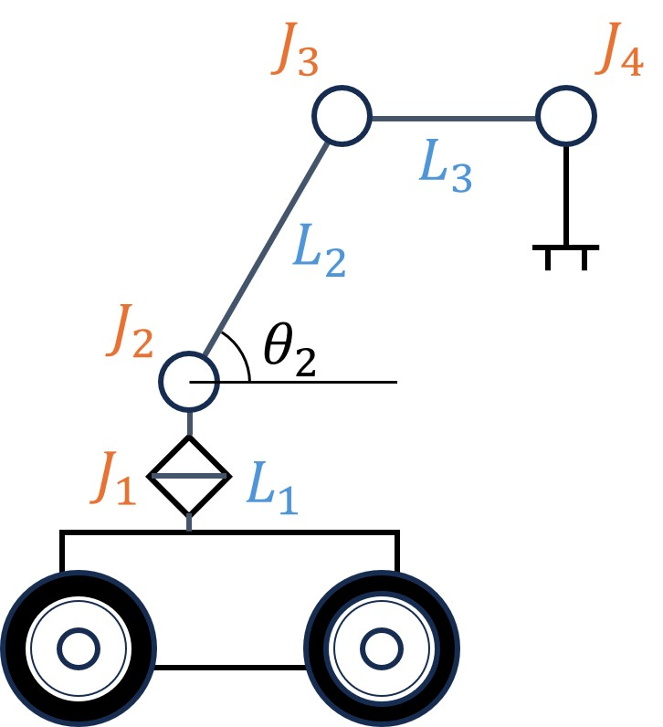
問題は序に掲げた（$\boldsymbol F=(-8.0,\ 5.0,\ 7.0)$ N、$L_2=0.4$ m、$\theta_2=45^\circ$、$L_3=0.3$ m 水平、腕は $xz$ 平面）。
解答（自作）
① 系と基準：腕に働く力 $\boldsymbol F$（作用点 $J_4$）。$J_1$ 軸は鉛直で、模式図では $J_2$ の真下にある → $J_2$ は $J_1$ 軸上の点なので、$J_1$ 軸の基準点に $J_2$ を選ぶ（$L_1$ の長さが分からなくても解ける）。$J_3$ 軸の基準点は $J_3$ そのもの。
② 座標：$J_2$ を原点とし、腕は $+x$ の側へ伸びるとする（下の注意）。$\boldsymbol u_{J1}=(0,\ 0,\ 1)$。$J_3$ 軸は腕の平面（$xz$ 平面）に垂直なので $y$ 方向、$\boldsymbol u_{J3}=(0,\ 1,\ 0)$ とする。
③ 位置：$J_3=(L_2\cos45^\circ,\ 0,\ L_2\sin45^\circ)=(0.2828,\ 0,\ 0.2828)$ m、$J_4=J_3+(L_3,\ 0,\ 0)=(0.5828,\ 0,\ 0.2828)$ m。$\boldsymbol r_1=\overrightarrow{J_2J_4}=(0.5828,\ 0,\ 0.2828)$、$\boldsymbol r_3=\overrightarrow{J_3J_4}=(0.3,\ 0,\ 0)$。
④ $J_1$ 軸：三重積の行列式で $$\begin{aligned}\tau_{J1}&=\begin{vmatrix}0&0&1\\0.5828&0&0.2828\\-8.0&5.0&7.0\end{vmatrix}=1\times\begin{vmatrix}0.5828&0\\-8.0&5.0\end{vmatrix}\\&=0.5828\times5.0-0\times(-8.0)=2.914\end{aligned}$$ （1行目の 0 の項は消える。残るのは $z$ 成分 $F_yr_x-F_xr_y$ だけ）。
⑤ $J_3$ 軸：$\boldsymbol M_{J3}=\boldsymbol r_3\times\boldsymbol F$：$x$ $(7.0)(0)-(5.0)(0)=0$、$y$ $(-8.0)(0)-(7.0)(0.3)=-2.10$、$z$ $(5.0)(0.3)-(-8.0)(0)=1.50$ → $(0,\ -2.10,\ 1.50)$。$\tau_{J3}=\boldsymbol u_{J3}\cdot\boldsymbol M_{J3}=-2.10$ N·m。
⑥ 確かめと答え：
・$J_1$ 軸を真上から見ると、$J_4$ の影は軸から $x$ 方向に 0.5828 m、力の影は $(-8.0,\ 5.0)$。軸を回すのは腕に垂直な $F_y=5.0$ N だけで、$2.914$ ✓（$F_x$ は軸へ向かう成分、$F_z$ は軸に平行）。
・$J_3$ 軸を $+y$ 側から見ると、$J_4$ は軸から水平に 0.3 m、効くのは腕に垂直な $F_z=7.0$ N だけで大きさ $0.3\times7.0=2.10$ ✓。符号が負なのは、$+y$ 軸まわりの正の向き（$z\to x$）と逆、つまり $F_z$ が腕の先を持ち上げる向きだから。
・答え：$J_1$ 軸まわり 2.91 N·m（上から見て反時計回り＝先端を $+y$ 側へ振る向き）、$J_3$ 軸まわり −2.10 N·m（$\boldsymbol u=+\boldsymbol j$ として。大きさ 2.10 N·m、先端を持ち上げる向き）。
PHOTO 4｜現実
1.5トンを超える腕が、関節ごとのトルクを加減して、カップ一杯の重さだけを傾けてみせた。
Frank Q. Brown（Los Angeles Times）／CC BY 4.0／Wikimedia Commons（ロサンゼルス、ビルトモア・ホテル、1967年。UCLA 図書館）
MITATE 4｜見立て
茶碗を受け取れば止まり、空にして戻せば向きを変えて帰る――人形の中の歯車は、碗の重さを合図に動いている。
PHGCOM／CC BY-SA 3.0／Wikimedia Commons（からくり人形（茶運び人形とみられる）、1800年頃、大英博物館で撮影）
外部の問題は、問題文の原文（英語）を添えて和訳した。図は原図をそのまま転載した。座標の取り方が講義資料と違う（$y$ 軸が鉛直）ものがあるが、どれも右手系である。
$xy$ 平面にある薄い板 OABC を、ケーブル BD が張力 2 kN で引いている（ケーブルは点 D の摩擦のない輪を通る）。張力が点 O のまわりに与えるモーメントを求めよ。（座標は m で、B$=(-0.9,\ 1.1,\ 0)$、D$=(0.4,\ 0,\ 1.0)$。$y$ 軸が上、$x$ 軸が右、$z$ 軸が手前。）
原文：A thin plate OABC sits in the xy plane. Cable BD pulls with a tension of 2 kN through a frictionless ring at point D. Find the moment caused by the tension force around point O.
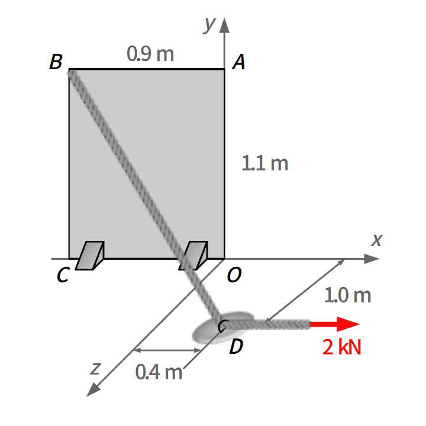
出典：Baker & Haynes, Engineering Statics: Open and Interactive, §4.4, Example 4.4.3（CC BY-NC-SA 4.0）https://engineeringstatics.org/Chapter_04-moments-in-three-dimensions.html。和訳と（ ）内の座標の書き起こしは本教材。公式解答 $\boldsymbol M_O=(1.114,\ 0.911,\ -0.446)$ kN·m と照合済み。
解答
① 系：板。ケーブルは板の点 B を、B から D の向きに引く（輪で向きが変わる先は関係ない）。基準点 O。
② 座標は問題のとおり（右手系：$x$ 右・$y$ 上・$z$ 手前）。
③ $\overrightarrow{\mathrm{BD}}=(0.4-(-0.9),\ 0-1.1,\ 1.0-0)=(1.3,\ -1.1,\ 1.0)$、長さ $\sqrt{1.69+1.21+1.00}=\sqrt{3.90}=1.975$ m。$\boldsymbol F=2\times(1.3,\ -1.1,\ 1.0)/1.975=(1.317,\ -1.114,\ 1.013)$ kN。$\boldsymbol r=\overrightarrow{\mathrm{OB}}=(-0.9,\ 1.1,\ 0)$ m。
④ (2.54)：$x$ $F_zr_y-F_yr_z=1.013\times1.1-0=1.114$。$y$ $F_xr_z-F_zr_x=0-1.013\times(-0.9)=0.911$。$z$ $F_yr_x-F_xr_y=(-1.114)(-0.9)-1.317\times1.1=1.003-1.448=-0.446$。
⑤ $\boldsymbol M_O=(1.114,\ 0.911,\ -0.446)$ kN·m、大きさ 1.507 kN·m。
⑥ 確かめ（作用線上の別の点）：$\boldsymbol r=\overrightarrow{\mathrm{OD}}=(0.4,\ 0,\ 1.0)$ でも、$x$ $1.013\times0-(-1.114)(1.0)=1.114$、$y$ $1.317\times1.0-1.013\times0.4=0.911$、$z$ $(-1.114)(0.4)-0=-0.446$ で一致 ✓。D の座標のほうが 0 を含むので計算が楽――作用線上のどの点を選んでもよい（4.3 節）ことの使いどころ。
1辺 2 ft の立方体の箱が、固定されたパイプ BG に摩擦のない蝶番 B、G で取り付けられている。箱に $P_1=30$ lb、$P_2=25$ lb の2力が働く。(a) $P_1$ が線 BG のまわりに与えるモーメントの大きさ、(b) $P_2$ が線 BG のまわりに与えるモーメントの大きさを求めよ。（座標は ft で、A$=(2,0,0)$、B$=(2,2,0)$、G$=(0,2,2)$、H$=(0,0,2)$、D$=(2,0,2)$。$P_1$ は B に $-y$ 向き（A の向き）、$P_2$ は H に $+x$ 向き（D の向き）。）
原文：A 2 ft per side square box is attached to fixed pipe BG by two frictionless hinges B and G. There are two forces applied to the box, P1 = 30 lb and P2 = 25 lb. (a) Find the magnitude of the moment caused by force P1 about line BG. (b) Find the magnitude of the moment caused by force P2 about line BG.
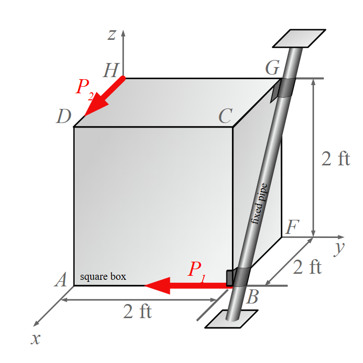
出典：Baker & Haynes, Engineering Statics, §4.4, Example 4.4.6（CC BY-NC-SA 4.0）https://engineeringstatics.org/Chapter_04-moments-in-three-dimensions.html。和訳と（ ）内の座標の書き起こしは本教材（ウェブページの問題文の冒頭には、例題4.4.3 の文が誤って入っているので除いた）。公式解答 (a) 0、(b) 35.355 ft·lb と照合済み。
解答
① 系：箱。求めるのは軸 BG まわり。軸上の点として B を選ぶ。
② $\overrightarrow{\mathrm{BG}}=(-2,\ 0,\ 2)$、長さ $2\sqrt2$。$\boldsymbol u=(-1,\ 0,\ 1)/\sqrt2$。
③ (a) $P_1$ は B（軸上の点）に働くので、B からの $\boldsymbol r=\boldsymbol 0$。$\boldsymbol M_B=\boldsymbol 0$ で、$\tau=0$。作用線が軸と交わる力は、その軸を回さない（5.4 節：軸に垂直な面で見ると腕が 0）。
④ (b) $\boldsymbol P_2=(25,\ 0,\ 0)$、$\boldsymbol r=\overrightarrow{\mathrm{BH}}=(-2,\ -2,\ 2)$。三重積の行列式で $$\begin{aligned}\tau&=\begin{vmatrix}-1/\sqrt2&0&1/\sqrt2\\-2&-2&2\\25&0&0\end{vmatrix}\\&=-\tfrac{1}{\sqrt2}\bigl((-2)(0)-2\cdot0\bigr)-0+\tfrac{1}{\sqrt2}\bigl((-2)(0)-(-2)(25)\bigr)\\&=\frac{50}{\sqrt2}=35.36\ \mathrm{ft\cdot lb}\end{aligned}$$
⑤ 確かめ（軸上の別の点 G、作用線上の別の点 D）：$\boldsymbol r=\overrightarrow{\mathrm{GD}}=(2,\ -2,\ 0)$ で $\boldsymbol M_G=(0,\ 0,\ 50)$、$\boldsymbol u\cdot\boldsymbol M_G=50/\sqrt2=35.36$ ✓。
⑥ 答え：(a) 0、(b) 35.4 ft·lb（$\boldsymbol u$ を B→G にとると正）。
大きさ 100 lb の力が、点 O と点 A を結ぶ線に沿って（O から A の向きに）働く。この力が、点 B と点 C を結ぶ軸のまわりに与えるモーメントを求めよ。（座標は ft で、O$=(0,0,0)$、A$=(6,\ 3,\ 4)$、B$=(0,\ 0,\ 4)$、C$=(6,\ 0,\ 0)$。6×3×4 ft の箱の頂点。）
原文：A 100 lb force acts along the line connecting points O and A in the diagram below. What moment does this force exert about the axis connecting points B and C?
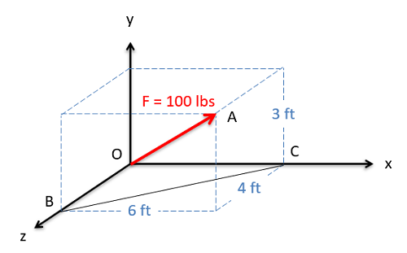
出典：Jacob Moore ほか, Mechanics Map, 3.5 “Moment about an Axis”, Question 2（Creative Commons 表示-継承。版の記載なし）https://mechanicsmap.org/websites/3_equilibrium_rigid_body/3-5_moment_about_an_axis/momentaboutanaxis.html。和訳と座標の書き起こしは本教材。公式解答 $3600/\sqrt{793}=127.8$ ft·lb と照合済み。
解答
① 系と基準：力の作用線は O を通る。軸 BC 上の点として C を選ぶ（B でもよい。⑥で確かめる）。← 力の作用線上の点 O を作用点に使うと、$\boldsymbol r$ が簡単になる。
② $\overrightarrow{\mathrm{BC}}=(6,\ 0,\ -4)$、長さ $\sqrt{52}$。$\boldsymbol u=(6,\ 0,\ -4)/\sqrt{52}$。
③ $\boldsymbol F=100\times(6,\ 3,\ 4)/\sqrt{61}=(76.82,\ 38.41,\ 51.21)$ lb。$\boldsymbol r=\overrightarrow{\mathrm{CO}}=(-6,\ 0,\ 0)$ ft（C から作用線上の点 O へ）。
④ $\boldsymbol M_C=\boldsymbol r\times\boldsymbol F$：$x$ $F_zr_y-F_yr_z=0$、$y$ $F_xr_z-F_zr_x=0-51.21\times(-6)=307.3$、$z$ $F_yr_x-F_xr_y=38.41\times(-6)-0=-230.5$。$\boldsymbol M_C=(0,\ 307.3,\ -230.5)$ ft·lb。
⑤ (2.60)：$\tau=\boldsymbol u\cdot\boldsymbol M_C=(6\times0+0\times307.3+(-4)(-230.5))/\sqrt{52}=922.0/7.211=127.8$ ft·lb。
⑥ 確かめ（軸上の別の点 B）：$\boldsymbol r=\overrightarrow{\mathrm{BO}}=(0,0,-4)$、$\boldsymbol M_B=(-F_y(-4),\ F_x(-4),\ 0)=(153.6,\ -307.3,\ 0)$、$\tau=6\times153.6/\sqrt{52}=127.8$ ✓。$\boldsymbol M_B\ne\boldsymbol M_C$ でも軸成分は同じ（5.3 節）。答え：127.8 ft·lb（$\boldsymbol u$ を B→C にとると正）。
原文：What is the torque about the origin of the force (5.0 i − 2.0 j + 1.0 k) N if it is applied at the point whose position is r = (−2.0 i + 4.0 j) m?
出典：OpenStax, University Physics Volume 1, Chapter 10 Problems, Problem 83（CC BY 4.0）https://openstax.org/books/university-physics-volume-1/pages/10-problems。和訳は本教材。公式解答 $4.0\boldsymbol i+2.0\boldsymbol j-16.0\boldsymbol k$ N·m と照合済み。
① $\boldsymbol r=(-2,\ 4,\ 0)$、$\boldsymbol F=(5,\ -2,\ 1)$。
② (2.54)：$x$ $F_zr_y-F_yr_z=1\times4-0=4$、$y$ $F_xr_z-F_zr_x=0-1\times(-2)=2$、$z$ $F_yr_x-F_xr_y=(-2)(-2)-5\times4=4-20=-16$。
③ $\boldsymbol M=(4.0,\ 2.0,\ -16.0)$ N·m。確かめ：$\boldsymbol M\cdot\boldsymbol r=-8+8+0=0$ ✓、$\boldsymbol M\cdot\boldsymbol F=20-4-16=0$ ✓。
原文：Determine the components of a 5 kN force F acting at point A, in the direction of a line from A to B.
出典：Baker & Haynes, Engineering Statics, §2.5, Example 2.5.5（CC BY-NC-SA 4.0）https://engineeringstatics.org/Chapter_02-unit-vectors.html。和訳は本教材。公式解答 $(-3.51,\ -1.17,\ 3.36)$ kN と照合済み。
① $\overrightarrow{\mathrm{AB}}=(-4.5,\ -1.5,\ 4.3)$、長さ $\sqrt{20.25+2.25+18.49}=\sqrt{40.99}=6.402$ m。
② (1.3)：$\boldsymbol F=5\times(-4.5,\ -1.5,\ 4.3)/6.402=(-3.51,\ -1.17,\ 3.36)$ kN。
③ 確かめ：$\sqrt{3.514^2+1.171^2+3.358^2}=5.00$ kN ✓。
出典：本教材の自作。
① $\boldsymbol r\times\boldsymbol F$：$x$ $F_zr_y-F_yr_z=0-40\times0.1=-4$、$y$ $F_xr_z-F_zr_x=0$、$z$ $F_yr_x-F_xr_y=40\times0.2=8$ → $(-4,\ 0,\ 8)$ N·m。
② $\boldsymbol F\times\boldsymbol r=-\boldsymbol r\times\boldsymbol F=(4,\ 0,\ -8)$。
③ モーメントは $\boldsymbol r\times\boldsymbol F$（$\boldsymbol r$ が先、4.4 節）＝$(-4,\ 0,\ 8)$ N·m。$z$ 成分 8 は「$+z$ 側から見て、$x$ 方向 0.2 m の点を $+y$ 向きに押す」反時計回りで、直感と合う。
原文：A hot air balloon 30 ft above the ground is tethered by three cables as shown in the diagram. If the balloon is pulling upwards with a force of 900 lb, what is the tension in each of the three cables? The grid lines on the ground plane are spaced 10 ft apart.
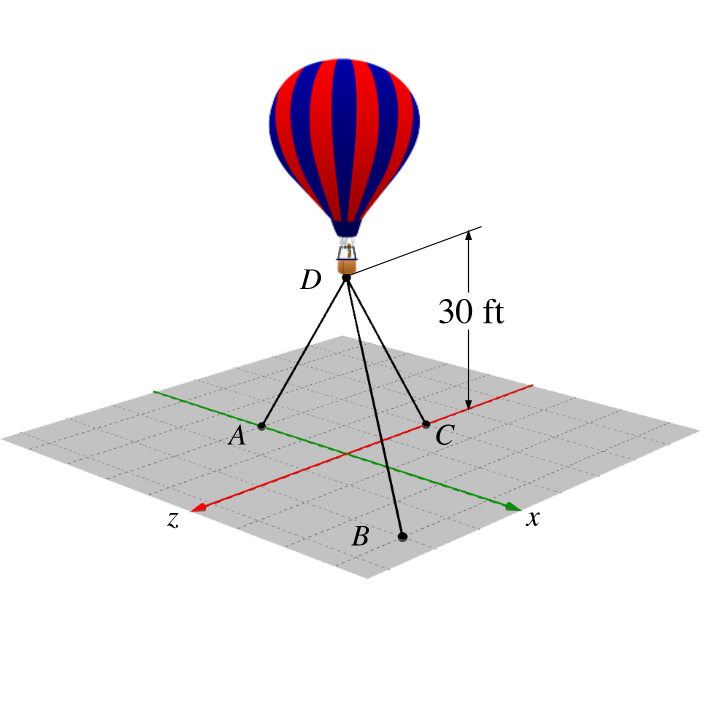
出典：Baker & Haynes, Engineering Statics, §3.5, Example 3.5.3（CC BY-NC-SA 4.0）https://engineeringstatics.org/ch3-3d-particles.html。和訳と（ ）内の座標の書き起こしは本教材（ウェブページの画像の代替テキストは B の $z$ 座標を −20 としているが、図と公式解答は +20 で一致する）。公式解答 A 464 lb、B 402 lb、C 309 lb と照合済み。
① 考え方：点 D では、上向き 900 lb と3本の張力（D から A、B、C の向き）がつり合う。言い換えると、下向き 900 lb の力 $(0,\ -900,\ 0)$ を、3本のケーブルの向きの力に分解する（1.4 節）。（釣合いの考え方は第4回で詳しく扱う。）
② 単位ベクトル：$\overrightarrow{\mathrm{DA}}=(-20,-30,0)$、長さ 36.06 → $(-0.5547,\ -0.8321,\ 0)$。$\overrightarrow{\mathrm{DB}}=(30,-30,20)$、長さ 46.90 → $(0.6396,\ -0.6396,\ 0.4264)$。$\overrightarrow{\mathrm{DC}}=(0,-30,-20)$、長さ 36.06 → $(0,\ -0.8321,\ -0.5547)$。
③ (2.50)：$x$：$-0.5547T_A+0.6396T_B=0$、$z$：$0.4264T_B-0.5547T_C=0$、$y$：$-0.8321T_A-0.6396T_B-0.8321T_C=-900$。
④ $x$ の式から $T_A=1.1531T_B$、$z$ の式から $T_C=0.7687T_B$。$y$ の式に代入：$(0.9595+0.6396+0.6396)T_B=2.2387T_B=900$ → $T_B=402.0$ lb。$T_A=463.6$ lb、$T_C=309.0$ lb。
⑤ 確かめ：3式に戻すと $x$：$-257.2+257.1\approx0$、$z$：$171.4-171.4=0$、$y$：$-385.7-257.1-257.2=-900.0$ ✓。答え：A 464 lb、B 402 lb、C 309 lb。
原文：A cable attached to the top of a pole as shown below carries a 3000 lb tension force. What is the moment vector this causes about the base of the pole? What is the overall magnitude of the moment about the base of the pole?
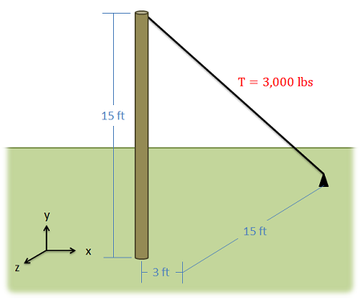
出典：Jacob Moore ほか, Mechanics Map, 3.4 “Moment Vector”, Question 4（Creative Commons 表示-継承。版の記載なし）https://mechanicsmap.org/websites/3_equilibrium_rigid_body/3-4_moment_vector/momentvector.html。和訳と（ ）内の寸法の書き起こしは本教材。公式解答 $\boldsymbol M=(-31506,\ 0,\ -6301)$ ft·lb、32,130 ft·lb と照合済み。
① 根元 O を原点。頂点 $(0,\ 15,\ 0)$、アンカー $(3,\ 0,\ -15)$。ケーブルの向き（頂点→アンカー）$(3,\ -15,\ -15)$、長さ $\sqrt{459}=21.42$ ft。
② $\boldsymbol T=3000\times(3,\ -15,\ -15)/21.42=(420.1,\ -2100.4,\ -2100.4)$ lb、$\boldsymbol r=(0,\ 15,\ 0)$ ft。
③ (2.54)：$x$ $T_zr_y-T_yr_z=(-2100.4)(15)-0=-31506$、$y$ $T_xr_z-T_zr_x=0$、$z$ $T_yr_x-T_xr_y=0-420.1\times15=-6301$。
④ $\boldsymbol M_O=(-31506,\ 0,\ -6301)$ ft·lb、大きさ $\sqrt{31506^2+6301^2}=32{,}130$ ft·lb。$y$ 成分（鉛直なポールの軸まわり）が 0 なのは、例題8 と同じく、作用線がポールの軸と交わるから。
原文：A 5kN force in the y-z plane is exerted at the end of an arm as shown below. What is the moment that this force exerts about the central shaft (the y axis)?
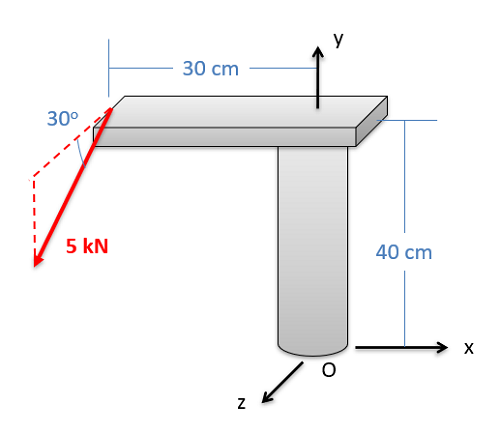
出典：Jacob Moore ほか, Mechanics Map, 3.5 “Moment about an Axis”, Question 1（Creative Commons 表示-継承。版の記載なし）https://mechanicsmap.org/websites/3_equilibrium_rigid_body/3-5_moment_about_an_axis/momentaboutanaxis.html。和訳と（ ）内の書き起こしは本教材。公式解答 $M_y=1.30$ kN·m と照合済み。
① シャフトの軸は $y$ 軸、$\boldsymbol u=\boldsymbol j$。軸上の点として原点 O。
② $\boldsymbol F=(0,\ -2.5,\ 4.330)$ kN、$\boldsymbol r=(-0.3,\ 0.4,\ 0)$ m。
③ $\boldsymbol M_O$：$x$ $F_zr_y-F_yr_z=4.330\times0.4=1.732$、$y$ $F_xr_z-F_zr_x=0-4.330\times(-0.3)=1.299$、$z$ $F_yr_x-F_xr_y=(-2.5)(-0.3)=0.750$。
④ $\tau=\boldsymbol j\cdot\boldsymbol M_O=$ 1.30 kN·m。確かめ（5.4 節）：$+y$ 側から見下ろすと、軸から 0.3 m の点に、アームに垂直な $F_z=4.33$ kN が働く：$0.3\times4.33=1.30$ ✓。下向きの成分 $F_y$ は軸に平行で効かない。
原文（原題は釣合いの問題）：The bent bar shown is held in a horizontal plane by a fixed connection at C while cable AB exerts a 500 lb force on point A. Given A=(4,4,5), B=(6,0,4) and C=(0,4,0). Find the reaction force C and concentrated moment M with components Mx, My and Mz required to hold the bar in this position under this condition.
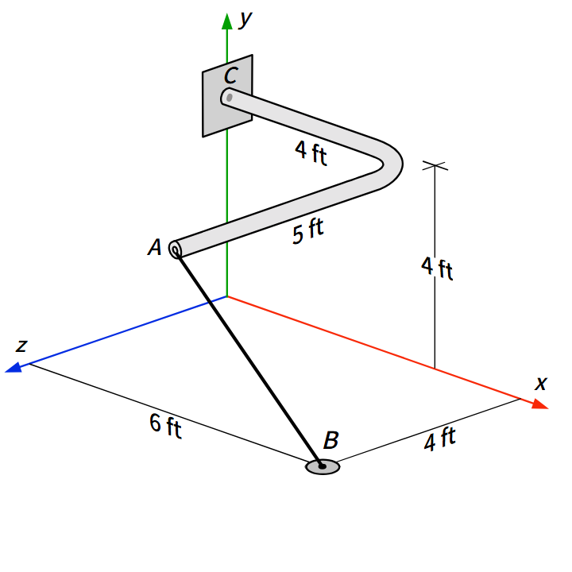
出典：Baker & Haynes, Engineering Statics, §5.5, Example 5.5.1（CC BY-NC-SA 4.0）https://engineeringstatics.org/Chapter_05-3d-rigid-body-equilibrium.html。和訳と、問いを「力・偶力系」に読み替えたのは本教材。公式解答（$\boldsymbol F=(218,\ -436,\ -109)$ lb、$\boldsymbol r_{CA}\times\boldsymbol F=(2182,\ 1528,\ -1746)$ ft·lb）と照合済み。
① $\overrightarrow{\mathrm{AB}}=(2,\ -4,\ -1)$、長さ $\sqrt{21}=4.583$ ft。$\boldsymbol F=500\times(2,\ -4,\ -1)/4.583=(218.2,\ -436.4,\ -109.1)$ lb。
② 6.2 節：C に集めると $\boldsymbol R=\boldsymbol F=(218.2,\ -436.4,\ -109.1)$ lb。
③ $\boldsymbol r=\overrightarrow{\mathrm{CA}}=(4,\ 0,\ 5)$ ft。$\boldsymbol M_C=\boldsymbol r\times\boldsymbol F$：$x$ $F_zr_y-F_yr_z=0-(-436.4)(5)=2182$、$y$ $F_xr_z-F_zr_x=218.2\times5-(-109.1)(4)=1091+436.4=1527$、$z$ $F_yr_x-F_xr_y=(-436.4)(4)-0=-1746$。$\boldsymbol M_C=(2182,\ 1527,\ -1746)$ ft·lb、大きさ 3185 ft·lb。
④ 第4回への橋渡し：棒が止まっているには、固定端 C が逆向きの力 $(-218,\ 436,\ 109)$ lb とモーメント $(-2182,\ -1527,\ 1746)$ ft·lb を棒に与えればよい（原題の答え）。和が 0 になるようにする――これが釣合いである。
原文：The skycam at Stanford University Stadium has a mass of 20 kg and is supported by three cables as shown. Assuming that it is currently in equilibrium, find the tension in each of the three supporting cables.
出典：Baker & Haynes, Engineering Statics, §3.5, Example 3.5.4（CC BY-NC-SA 4.0）https://engineeringstatics.org/ch3-3d-particles.html。和訳と（ ）内の単位ベクトルの書き起こしは本教材。公式解答 A 196.4 N、B 192.2 N、C 98.5 N と照合した（C の差は下の解答⑤）。
① 重さ $(0,\ -196.2,\ 0)$ N を打ち消す上向き $(0,\ 196.2,\ 0)$ を、3本のケーブルの向きに分解する：$T_A\hat{\boldsymbol A}+T_B\hat{\boldsymbol B}+T_C\hat{\boldsymbol C}=(0,\ 196.2,\ 0)$。
② 数値：$\hat{\boldsymbol A}=(0.8192,\ 0.5736,\ 0)$、$\hat{\boldsymbol B}=(-0.8365,\ 0.2588,\ -0.4830)$、$\hat{\boldsymbol C}=(0,\ 0.3420,\ 0.9397)$（どれも長さ 1 を確かめる）。
③ $x$：$0.8192T_A-0.8365T_B=0$ → $T_A=1.0211T_B$。$z$：$-0.4830T_B+0.9397T_C=0$ → $T_C=0.5140T_B$。
④ $y$：$0.5736(1.0211T_B)+0.2588T_B+0.3420(0.5140T_B)=(0.5857+0.2588+0.1758)T_B=1.0203T_B=196.2$ → $T_B=192.3$ N、$T_A=196.4$ N、$T_C=98.8$ N。
⑤ 公式解答の $T_C=98.5$ N との差：公式解答は途中の係数を丸めた（$-0.4830$ を $-0.482$ とした）行列で解いており、丸めた係数で解き直すと 98.5 N になる。丸めない計算では 98.8 N（Python で確認）。3つの向きがかなり傾いているとき、係数の丸めが答えに効く例でもある。
出典：本教材の自作（3次元の偶力の良問が公開教材に見つからなかったため、例題16 の幾何を借りた）。
① (1) 6.1 節：$-\boldsymbol P$ 側の B から $\boldsymbol P$ 側の H へ $\boldsymbol r_{BH}=(-2,\ -2,\ 2)$。$\boldsymbol M=\boldsymbol r_{BH}\times\boldsymbol P$：$x$ $0\cdot(-2)-0\cdot2=0$、$y$ $25\times2-0\times(-2)=50$、$z$ $0\times(-2)-25\times(-2)=50$ → $(0,\ 50,\ 50)$ ft·lb、大きさ 70.7 ft·lb。
② (2) G$=(0,2,2)$ まわり：$\overrightarrow{\mathrm{GH}}=(0,-2,0)$、$(0,-2,0)\times(25,0,0)=(0,\ 0,\ 50)$。$\overrightarrow{\mathrm{GB}}=(2,0,-2)$、$(2,0,-2)\times(-25,0,0)=(0,\ 50,\ 0)$。和 $(0,\ 50,\ 50)$ ✓（偶力はどの点まわりでも同じ）。
③ (3) $\boldsymbol u=(-1,0,1)/\sqrt2$、$\tau=(0+0+50)/\sqrt2=35.4$ ft·lb。例題16 (b)（H の $\boldsymbol P$ だけ）と同じになるのは、B の $-\boldsymbol P$ が軸 BG 上の点 B に働き、軸まわりのモーメントが 0だから（例題16 (a) と同じ理由）。
| 講義資料 | 本教材 |
|---|---|
| p.1–3 マニピュレータの図、今日のポイント | 序 |
| p.4 座標系（右手系・左手系） | 1.1 |
| p.5 2・3・1 3次元の力・合成（図2.44） | 1.2、1.3 |
| p.6–7 力の分解（式2.49・2.50、図2.45） | 1.4、3.7 |
| p.8–10 2・3・2 3次元のモーメント、ベクトルが表すもの、成分（図2.46–2.48） | 2章 |
| p.11 外積（教科書 p.23） | 3.1–3.4 |
| p.12–13 点まわりのモーメント（式2.53・2.54、図2.49、順序の注意） | 4章 |
| p.14 歪対称行列とベクトル積 | 3.5 |
| p.15–17 軸まわりのモーメント（式2.60、手順、三重積の証明） | 5.2、5.6、5.7（5.3–5.5 は本教材の追加） |
| p.18 まとめ（点まわり／軸まわり） | 5.7 |
| p.19 力とモーメントの合成（式2.58・2.59） | 6.3（6.4 は本教材の追加） |
| p.20 3次元の偶力のモーメント | 6.1 |
| p.21–22 力の移動 | 6.2 |
| p.23 例題（ロボットの関節 $J_1$・$J_3$） | 序、7.3 |
| p.24–28 例題2・9 | 7.2 |


.jpg){kind=link}